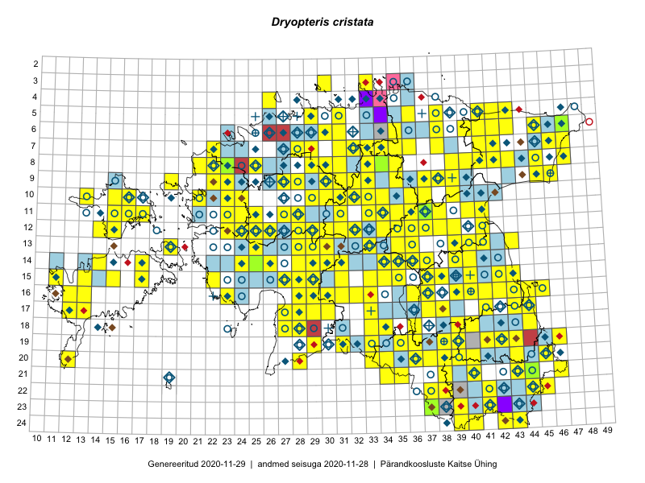

Dryopteris cristata — suga-sõnajalg
Dryopteridaceae :: Dryopteris cristata (L.) A.Gray (756); Aspidium cristatum (L.) Sw. (26)

Kaart põhineb 1507 kirjel:
vaatlusi 649
herbaareksemplare 133
PKÜ kirjeid1 24
ELFi kirjeid2 674
LVA kirjeid3 27
Taime kaasaegsed ja ajaloolised leiukohad asuvad 404 ruudus.
Tingmärgid ja leidudega ruutude arvud periooditi uues (u) ja 2005 andmestikus (v)
| █ | vahemik | u4 | v5 |
|---|---|---|---|
| █ | 2006–2020 | 340 | – |
| ◆/◇ | 1971–2005 | 176 | 191 |
| ○ | 1921–1970 | 143 | 69 |
| + | kuni 1920 | 17 | 0 |
| × | hävinud | – | 0 |
| ? | kaheldav | – | 0 |
| Ruut | Leidja(d) | Leiuaeg | Kirje |
|---|---|---|---|
| 08-29 | Toivo Sepp | 2020-09-18 | ELF: 24983 |
| 14-32 | Tiit Hallikma | 2020-09-10 | ELF: 1104 |
| 16-28 | Ott Luuk, Meeli Mesipuu | 2020-09-10 | ruut/ala: Dryopteris cristata (L.) A.Gray |
| 17-38 | Eerik Leibak | 2020-08-30 | ELF: 679 |
| 19-36 | Eerik Leibak | 2020-08-30 | ELF: 692 |
| 15-17 | Mari Reitalu, Sirje Azarov | 2020-08-27–2020-09-06 | ruut/ala: Dryopteris cristata (L.) A.Gray |
| 18-33 | Ott Luuk, Jaak-Albert Metsoja | 2020-08-21 | ruut/ala: Dryopteris cristata (L.) A.Gray |
| 11-38 | Peedu Saar | 2020-08-19 | ruut/ala: Dryopteris cristata (L.) A.Gray |
| 12-39 | Peedu Saar | 2020-08-19 | ruut/ala: Dryopteris cristata (L.) A.Gray |
| 19-36 | Meeli Mesipuu | 2020-08-19 | ruut/ala: Dryopteris cristata (L.) A.Gray |
| 19-36 | Meeli Mesipuu | 2020-08-19 | punkt: Dryopteris cristata (L.) A.Gray |
| 19-35 | Meeli Mesipuu | 2020-08-19 | ruut/ala: Dryopteris cristata (L.) A.Gray |
| 22-37 | Eerik Leibak | 2020-08-18 | ELF: 890 |
| 23-37 | Eerik Leibak | 2020-08-18 | ELF: 886 |
| 20-35 | Tiit Hallikma | 2020-08-09 | ELF: 15017 |
| 20-34 | Tiit Hallikma | 2020-08-09 | ELF: 16128 |
| 15-43 | Peedu Saar | 2020-08-08 | ruut/ala: Dryopteris cristata (L.) A.Gray |
| 15-42 | Peedu Saar | 2020-08-08 | ruut/ala: Dryopteris cristata (L.) A.Gray |
| 15-15 | Mari Reitalu, Sirje Azarov | 2020-08-07 | ruut/ala: Dryopteris cristata (L.) A.Gray |
| 23-42;24-42 | Eerik Leibak | 2020-08-06 | ELF: 330 |
| 22-41 | Toomas Kukk, Eerik Leibak | 2020-08-05 | ruut/ala: Dryopteris cristata (L.) A.Gray |
| 22-41 | Toomas Kukk | 2020-08-05 | ELF: 9951 |
| 22-42 | Toomas Kukk | 2020-08-05 | ELF: 9946 |
| 17-35 | Tiit Hallikma | 2020-08-05 | ELF: 18377 |
| 10-23 | Peedu Saar | 2020-08-05 | ruut/ala: Dryopteris cristata (L.) A.Gray |
| 14-40 | Peedu Saar | 2020-08-03 | ruut/ala: Dryopteris cristata (L.) A.Gray |
| 08-25 | Ott Luuk | 2020-07-22–2020-07-23 | ruut/ala: Dryopteris cristata (L.) A.Gray |
| 05-35 | Jaan Spiegel | 2020-07-18 | ELF: 13810 |
| 18-41 | Silvia Pihu | 2020-07-16 | ELF: 14838 |
| 08-26 | Eerik Leibak | 2020-07-16 | ELF: 2511 |
| 05-36 | Jaan Spiegel | 2020-07-15 | ELF: 11989 |
| 06-35 | Jaan Spiegel | 2020-07-15 | ELF: 11991 |
| 10-24 | Thea Kull | 2020-06-27 | punkt: Dryopteris cristata (L.) A.Gray |
| 10-24 | Thea Kull | 2020-06-27 | punkt: Dryopteris cristata (L.) A.Gray |
| 11-24 | Thea Kull | 2020-06-18 | punkt: Dryopteris cristata (L.) A.Gray |
| 12-23 | Thea Kull | 2020-06-17 | punkt: Dryopteris cristata (L.) A.Gray |
| 10-24 | Margus Ellermaa | 2020-06-17 | punkt: Dryopteris cristata (L.) A.Gray |
| 03-33 | Toomas Kukk, Meeli Mesipuu | 2020-06-10 | ruut/ala: Dryopteris cristata (L.) A.Gray |
| 03-33 | Toomas Kukk, Meeli Mesipuu | 2020-06-10 | ELF: 13763 |
| 12-27 | Toivo Sepp | 2019-09-29 | ELF: 20707 |
| 13-19 | Peedu Saar, Toomas Kukk | 2019-09-26 | ruut/ala: Dryopteris cristata (L.) A.Gray |
| 06-29 | Eerik Leibak | 2019-09-20 | ELF: 2432 |
| 10-21 | Ott Luuk | 2019-09-19 | ruut/ala: Dryopteris cristata (L.) A.Gray |
| 07-31 | Eerik Leibak | 2019-09-19 | ELF: 24766 |
| 09-19 | Toomas Kukk, Peedu Saar | 2019-09-17 | ruut/ala: Dryopteris cristata (L.) A.Gray |
| 09-19 | Toomas Kukk, Peedu Saar | 2019-09-17 | ELF: 13732 |
| 08-45 | Toomas Kukk, Thea Kull | 2019-09-12 | ruut/ala: Dryopteris cristata (L.) A.Gray |
| 06-47 | Peedu Saar, Timo Luhamäe | 2019-09-12 | ruut/ala: Dryopteris cristata (L.) A.Gray |
| 09-46 | Peedu Saar, Timo Luhamäe | 2019-09-11 | ruut/ala: Dryopteris cristata (L.) A.Gray |
| 08-43 | Ott Luuk, Meeli Mesipuu | 2019-09-10 | ruut/ala: Dryopteris cristata (L.) A.Gray |
| 08-25 | Ott Luuk, Peedu Saar | 2019-09-05 | ruut/ala: Dryopteris cristata (L.) A.Gray |
| 09-22 | Ott Luuk | 2019-09-04 | ELF: 24834 |
| 14-14 | Mari Reitalu, Sirje Azarov, Anne Teigamägi | 2019-09-04 | ruut/ala: Dryopteris cristata (L.) A.Gray |
| 14-14;15-14 | Mari Reitalu, Sirje Azarov, Anne Teigamägi | 2019-09-04 | ELF: 4202 |
| 09-22 | Ott Luuk | 2019-09-03–2019-09-04 | ruut/ala: Dryopteris cristata (L.) A.Gray |
| 08-21 | Peedu Saar | 2019-09-03 | ruut/ala: Dryopteris cristata (L.) A.Gray |
| 08-21;08-22 | Peedu Saar | 2019-09-03 | ELF: 2813 |
| 07-27 | Eerik Leibak | 2019-09-02 | ELF: 24762 |
| 08-30;09-30 | Toivo Sepp, Ott Luuk | 2019-08-30 | ELF: 934 |
| 15-31 | Meeli Mesipuu, Timo Luhamäe | 2019-08-28 | ruut/ala: Dryopteris cristata (L.) A.Gray |
| 13-29 | Mari Reitalu, Thea Kull | 2019-08-28 | ruut/ala: Dryopteris cristata (L.) A.Gray |
| 14-29 | Mari Reitalu, Thea Kull | 2019-08-28 | ruut/ala: Dryopteris cristata (L.) A.Gray |
| 15-35 | Meeli Mesipuu, Timo Luhamäe | 2019-08-27 | ruut/ala: Dryopteris cristata (L.) A.Gray |
| 08-23 | Peedu Saar, Ott Luuk, Sten Mander, Kersti Tambets, Kristine Fenske | 2019-08-22 | ruut/ala: Dryopteris cristata (L.) A.Gray |
| 11-25 | Thea Kull | 2019-08-18 | ruut/ala: Dryopteris cristata (L.) A.Gray |
| 11-25 | Thea Kull | 2019-08-18 | ELF: 2937 |
| 12-26 | Thea Kull | 2019-08-17 | ruut/ala: Dryopteris cristata (L.) A.Gray |
| 12-26 | Thea Kull | 2019-08-17 | ELF: 2236 |
| 09-22 | Peedu Saar | 2019-08-16 | ruut/ala: Dryopteris cristata (L.) A.Gray |
| 09-22 | Peedu Saar | 2019-08-16 | ELF: 2188 |
| 10-21 | Tõnu Ploompuu | 2019-08-15 | ELF: 222 |
| 10-21 | Tõnu Ploompuu | 2019-08-15 | ELF: 24802 |
| 10-21 | Tõnu Ploompuu | 2019-08-15 | ELF: 24803 |
| 11-36 | Peedu Saar | 2019-08-10 | ruut/ala: Dryopteris cristata (L.) A.Gray |
| 10-36 | Peedu Saar, Timo Luhamäe | 2019-08-08 | ruut/ala: Dryopteris cristata (L.) A.Gray |
| 03-33 | Ott Luuk, Jaak-Albert Metsoja | 2019-08-07 | ruut/ala: Dryopteris cristata (L.) A.Gray |
| 03-33 | Ott Luuk, Jaak-Albert Metsoja | 2019-08-07 | punkt: Dryopteris cristata (L.) A.Gray |
| 12-31 | Anneli Palo | 2019-08-05 | LVA: -1783773324 |
| 10-24 | Tõnu Ploompuu | 2019-08-03 | ELF: 7763 |
| 12-29 | Toivo Sepp | 2019-08-02 | ELF: 24739 |
| 20-39 | Peedu Saar, Toomas Kukk | 2019-08-01 | ruut/ala: Dryopteris cristata (L.) A.Gray |
| 10-33 | Ott Luuk | 2019-07-31 | ruut/ala: Dryopteris cristata (L.) A.Gray |
| 10-32 | Ott Luuk | 2019-07-31 | ruut/ala: Dryopteris cristata (L.) A.Gray |
| 09-31;09-32 | Toivo Sepp, Ott Luuk | 2019-07-25 | ELF: 24736 |
| 09-31 | Ott Luuk, Toivo Sepp | 2019-07-25 | ruut/ala: Dryopteris cristata (L.) A.Gray |
| 09-31 | Ott Luuk, Toivo Sepp | 2019-07-25 | ELF: 15845 |
| 09-31;09-32 | Ott Luuk, Toivo Sepp | 2019-07-25 | ELF: 24737 |
| 09-31 | Ott Luuk | 2019-07-25 | ELF: 24735 |
| 08-32;09-32 | Toivo Sepp, Ott Luuk | 2019-07-24 | ELF: 1414 |
| 08-31 | Ott Luuk, Toivo Sepp | 2019-07-24 | ruut/ala: Dryopteris cristata (L.) A.Gray |
| 08-22 | Peedu Saar | 2019-07-23 | ruut/ala: Dryopteris cristata (L.) A.Gray |
| 08-22 | Peedu Saar | 2019-07-23 | ruut/ala: Dryopteris cristata (L.) A.Gray |
| 08-22 | Peedu Saar | 2019-07-23 | ELF: 189 |
| 19-36 | Anneli Palo | 2019-07-17 | LVA: -275151840 |
| 19-35 | Ott Luuk, Peedu Saar | 2019-07-16 | ruut/ala: Dryopteris cristata (L.) A.Gray |
| 17-38 | Peedu Saar, Ott Luuk | 2019-07-15 | ruut/ala: Dryopteris cristata (L.) A.Gray |
| 18-36 | Ott Luuk, Peedu Saar | 2019-07-15 | punkt: Dryopteris cristata (L.) A.Gray |
| 08-27 | Eerik Leibak | 2019-07-14 | ELF: 865 |
| 19-38 | Thea Kull | 2019-07-11 | ruut/ala: Dryopteris cristata (L.) A.Gray |
| 12-36 | Eerik Leibak | 2019-07-11 | ruut/ala: Dryopteris cristata (L.) A.Gray |
| 19-39 | Thea Kull | 2019-07-10 | ruut/ala: Dryopteris cristata (L.) A.Gray |
| 20-45 | Ott Luuk, Tiit Hallikma | 2019-07-10 | ruut/ala: Dryopteris cristata (L.) A.Gray |
| 20-43 | Ott Luuk, Tiit Hallikma | 2019-07-09 | ruut/ala: Dryopteris cristata (L.) A.Gray |
| 12-38 | Ulvi Selgis | 2019-07-06 | LVA: 2107585856 |
| 11-36 | Jaanus Paal, Elo Raspel | 2019-07-05 | ELF: 24708 |
| 11-36 | Jaanus Paal, Elo Raspel | 2019-07-05 | ELF: 24709 |
| 11-36 | Jaanus Paal, Elo Raspel | 2019-07-05 | ELF: 24712 |
| 12-15 | Toomas Kukk, Eerik Leibak | 2019-07-04 | ELF: 608 |
| 12-15 | Eerik Leibak, Toomas Kukk | 2019-07-04 | ruut/ala: Dryopteris cristata (L.) A.Gray |
| 06-26 | Marika Arro, Triin Edovald, Herdis Fridolin, Nele Jõessar, Timo Kark, Lauri Klein, Merit Otsus, Kristin Pille, Reigo Roasto, Kaire Sirel | 2019-06-12 | LVA: -1856828994 |
| 11-37 | Ott Luuk, Peedu Saar | 2019-06-10 | ruut/ala: Dryopteris cristata (L.) A.Gray |
| 16-44 | Peedu Saar | 2019-06-07 | ruut/ala: Dryopteris cristata (L.) A.Gray |
| 16-45 | Ott Luuk | 2019-06-07 | punkt: Dryopteris cristata (L.) A.Gray |
| 16-45 | Ott Luuk | 2019-06-07 | ruut/ala: Dryopteris cristata (L.) A.Gray |
| 08-29 | Eerik Leibak | 2019-06-06 | ELF: 21998 |
| 15-37 | Lauri Mällo | 2019-05-25 | JPGH19249: Dryopteris cristata (L.) A.Gray |
| 10-23 | Meelis Leivits | 2019-05-17 | ELF: 7783 |
| 12-37 | Ott Luuk, Meeli Mesipuu | 2018-09-20 | ruut/ala: Dryopteris cristata (L.) A.Gray |
| 15-42 | Ott Luuk, Meeli Mesipuu | 2018-09-19 | ruut/ala: Dryopteris cristata (L.) A.Gray |
| 17-43 | Ott Luuk, Meeli Mesipuu | 2018-09-19 | ruut/ala: Dryopteris cristata (L.) A.Gray |
| 14-30 | Indrek Tammekänd | 2018-08-29 | ELF: 1191 |
| 10-32 | Ott Luuk | 2018-08-28 | ruut/ala: Dryopteris cristata (L.) A.Gray |
| 10-31;10-32 | Ott Luuk | 2018-08-28 | ELF: 1332 |
| 20-39 | Toomas Hirse | 2018-08-27 | ELF: 11674 |
| 10-30 | Ott Luuk, Toivo Sepp | 2018-08-27 | ruut/ala: Dryopteris cristata (L.) A.Gray |
| 11-31 | Ott Luuk | 2018-08-23 | ruut/ala: Dryopteris cristata (L.) A.Gray |
| 11-33 | Ott Luuk, Toivo Sepp | 2018-08-22 | ruut/ala: Dryopteris cristata (L.) A.Gray |
| 08-21 | Tõnu Ploompuu, Priit Kukk | 2018-08-21 | ELF: 24601 |
| 14-31 | Toomas Kukk | 2018-08-18 | punkt: Dryopteris cristata (L.) A.Gray |
| 07-47 | Meeli Mesipuu | 2018-08-18 | ruut/ala: Dryopteris cristata (L.) A.Gray |
| 13-19 | Mari Reitalu, Sirje Azarov | 2018-08-07 | ELF: 1421 |
| 19-31 | Peedu Saar | 2018-08-03 | ruut/ala: Dryopteris cristata (L.) A.Gray |
| 19-31 | Peedu Saar | 2018-08-03 | ELF: 24657 |
| 09-30 | Ott Luuk, Toivo Sepp | 2018-08-02 | punkt: Dryopteris cristata (L.) A.Gray |
| 09-30 | Ott Luuk, Toivo Sepp | 2018-08-02 | ELF: 24570 |
| 10-31 | Ott Luuk | 2018-08-01 | ruut/ala: Dryopteris cristata (L.) A.Gray |
| 10-31 | Ott Luuk | 2018-08-01 | punkt: Dryopteris cristata (L.) A.Gray |
| 15-42 | Peedu Saar | 2018-07-20 | ruut/ala: Dryopteris cristata (L.) A.Gray |
| 15-43 | Peedu Saar | 2018-07-20 | ruut/ala: Dryopteris cristata (L.) A.Gray |
| 15-43 | Peedu Saar | 2018-07-20 | ELF: 3026 |
| 07-46 | Peedu Saar | 2018-07-18 | ruut/ala: Dryopteris cristata (L.) A.Gray |
| 07-46 | Peedu Saar | 2018-07-18 | punkt: Dryopteris cristata (L.) A.Gray |
| 08-45 | Peedu Saar | 2018-07-17–2018-07-18 | ruut/ala: Dryopteris cristata (L.) A.Gray |
| 22-37 | Eerik Leibak | 2018-07-16 | ELF: 24674 |
| 09-26 | Thea Kull | 2018-07-14 | ELF: 24564 |
| 06-31 | Eerik Leibak | 2018-07-11 | ELF: 315 |
| 06-31 | Eerik Leibak | 2018-07-11 | ELF: 24540 |
| 09-27 | Mari Reitalu, Sirje Azarov | 2018-07-01 | ruut/ala: Dryopteris cristata (L.) A.Gray |
| 07-28 | Mari Reitalu, Sirje Azarov | 2018-06-30 | ruut/ala: Dryopteris cristata (L.) A.Gray |
| 21-39 | Eerik Leibak | 2018-06-27 | ELF: 19137 |
| 11-37 | Peedu Saar, Toomas Kukk | 2018-06-22 | punkt: Dryopteris cristata (L.) A.Gray |
| 16-31 | Indrek Tammekänd | 2018-06-04–2018-06-05 | ruut/ala: Dryopteris cristata (L.) A.Gray |
| 12-39 | Ulvi Selgis | 2017-09-29 | LVA: 1556605598 |
| 11-37 | Ülo Niinemets | 2017-09-23 | TAA0145459: Dryopteris cristata (L.) A.Gray |
| 11-15 | Peedu Saar, Ott Luuk | 2017-09-13 | ruut/ala: Dryopteris cristata (L.) A.Gray |
| 10-16 | Peedu Saar, Ott Luuk | 2017-09-11 | ruut/ala: Dryopteris cristata (L.) A.Gray |
| 14-26 | Indrek Tammekänd | 2017-09-04 | ruut/ala: Dryopteris cristata (L.) A.Gray |
| 19-29 | Toomas Kukk, Ott Luuk, Kersti Tambets, Timo Luhamäe, Sten Mander | 2017-08-29 | ruut/ala: Dryopteris cristata (L.) A.Gray |
| 14-35 | Peedu Saar, Susanna Vain | 2017-08-28 | ruut/ala: Dryopteris cristata (L.) A.Gray |
| 14-35 | Meeli Mesipuu, Ott Luuk, Helen Toom | 2017-08-28 | ruut/ala: Dryopteris cristata (L.) A.Gray |
| 11-40 | Peedu Saar, Ott Luuk | 2017-08-23 | ruut/ala: Dryopteris cristata (L.) A.Gray |
| 12-41 | Ott Luuk, Peedu Saar | 2017-08-23 | ruut/ala: Dryopteris cristata (L.) A.Gray |
| 15-37 | Peedu Saar, Susanna Vain | 2017-08-22 | ruut/ala: Dryopteris cristata (L.) A.Gray |
| 15-37 | Meeli Mesipuu | 2017-08-22 | ruut/ala: Dryopteris cristata (L.) A.Gray |
| 15-43 | Peedu Saar, Ott Luuk | 2017-08-21 | punkt: Dryopteris cristata (L.) A.Gray |
| 15-38 | Indrek Tammekänd | 2017-08-17 | ruut/ala: Dryopteris cristata (L.) A.Gray |
| 14-36 | Indrek Tammekänd | 2017-08-16 | ruut/ala: Dryopteris cristata (L.) A.Gray |
| 14-35 | Peedu Saar | 2017-08-15–2017-09-16 | ruut/ala: Dryopteris cristata (L.) A.Gray |
| 14-36 | Ott Luuk | 2017-08-15 | ruut/ala: Dryopteris cristata (L.) A.Gray |
| 14-36 | Meeli Mesipuu, Helen Toom | 2017-08-15 | ruut/ala: Dryopteris cristata (L.) A.Gray |
| 15-37 | Ott Luuk | 2017-08-14 | ruut/ala: Dryopteris cristata (L.) A.Gray |
| 22-39 | Anneli Palo | 2017-08-14 | LVA: 1153660624 |
| 15-28 | Peedu Saar, Timo Luhamäe | 2017-08-11 | ruut/ala: Dryopteris cristata (L.) A.Gray |
| 12-24 | Peedu Saar, Timo Luhamäe | 2017-08-09 | ruut/ala: Dryopteris cristata (L.) A.Gray |
| 12-25 | Peedu Saar, Timo Luhamäe | 2017-08-09 | ruut/ala: Dryopteris cristata (L.) A.Gray |
| 08-29 | Ott Luuk, Thea Kull | 2017-08-09 | ruut/ala: Dryopteris cristata (L.) A.Gray |
| 12-29 | Meeli Mesipuu, Indrek Tammekänd | 2017-08-09 | ruut/ala: Dryopteris cristata (L.) A.Gray |
| 12-30 | Meeli Mesipuu, Indrek Tammekänd | 2017-08-09 | ruut/ala: Dryopteris cristata (L.) A.Gray |
| 11-28 | Ott Luuk, Thea Kull | 2017-08-08 | ruut/ala: Dryopteris cristata (L.) A.Gray |
| 13-33 | Toomas Kukk, Ilmar Uibopuu | 2017-08-07 | ruut/ala: Dryopteris cristata (L.) A.Gray |
| 14-34 | Peedu Saar, Timo Luhamäe | 2017-08-07 | ruut/ala: Dryopteris cristata (L.) A.Gray |
| 15-37 | Thea Kull, Ott Luuk | 2017-08-04 | punkt: Dryopteris cristata (L.) A.Gray |
| 15-37 | Peedu Saar | 2017-08-03–2017-08-04 | ruut/ala: Dryopteris cristata (L.) A.Gray |
| 11-34 | Thea Kull, Ott Luuk | 2017-08-03 | ruut/ala: Dryopteris cristata (L.) A.Gray |
| 15-37 | Peedu Saar | 2017-08-03 | punkt: Dryopteris cristata (L.) A.Gray |
| 12-34 | Ott Luuk, Thea Kull | 2017-08-03 | ruut/ala: Dryopteris cristata (L.) A.Gray |
| 16-39 | Thea Kull, Ott Luuk | 2017-08-01 | ruut/ala: Dryopteris cristata (L.) A.Gray |
| 16-37 | Ott Luuk, Thea Kull | 2017-08-01 | ruut/ala: Dryopteris cristata (L.) A.Gray |
| 12-39 | Ulvi Selgis | 2017-07-28 | ruut/ala: Dryopteris cristata (L.) A.Gray |
| 12-39 | Ulvi Selgis | 2017-07-28 | LVA: -2123380420 |
| 10-39 | Ulvi Selgis | 2017-07-27 | ruut/ala: Dryopteris cristata (L.) A.Gray |
| 10-39 | Ulvi Selgis | 2017-07-27 | LVA: -346836072 |
| 23-39 | Peedu Saar, Ott Luuk | 2017-07-27 | ruut/ala: Dryopteris cristata (L.) A.Gray |
| 23-39 | Ott Luuk, Peedu Saar | 2017-07-27 | punkt: Dryopteris cristata (L.) A.Gray |
| 16-40 | Meeli Mesipuu | 2017-07-22–2017-07-30 | ruut/ala: Dryopteris cristata (L.) A.Gray |
| 13-36 | Ulvi Selgis | 2017-07-22 | punkt: Dryopteris cristata (L.) A.Gray |
| 13-36 | Ulvi Selgis | 2017-07-22 | LVA: 73434536 |
| 20-39 | Ilmar Uibopuu | 2017-07-21–2017-07-24 | ruut/ala: Dryopteris cristata (L.) A.Gray |
| 06-31 | Peedu Saar, Ott Luuk | 2017-07-21 | ruut/ala: Dryopteris cristata (L.) A.Gray |
| 06-31 | Ott Luuk, Peedu Saar | 2017-07-21 | punkt: Dryopteris cristata (L.) A.Gray |
| 06-35 | Ott Luuk, Peedu Saar | 2017-07-19 | ruut/ala: Dryopteris cristata (L.) A.Gray |
| 08-40 | Peedu Saar, Ott Luuk | 2017-07-18 | ruut/ala: Dryopteris cristata (L.) A.Gray |
| 08-40 | Ott Luuk, Peedu Saar | 2017-07-18 | punkt: Dryopteris cristata (L.) A.Gray |
| 06-27 | Evelin Laanest, Ilmar Uibopuu | 2017-07-18 | LVA: 2082241586 |
| 15-40 | Peedu Saar, Ott Luuk | 2017-07-05 | punkt: Dryopteris cristata (L.) A.Gray |
| 16-41 | Peedu Saar, Ott Luuk | 2017-07-03–2017-07-04 | ruut/ala: Dryopteris cristata (L.) A.Gray |
| 17-37 | Thea Kull, Ott Luuk | 2017-06-21 | ruut/ala: Dryopteris cristata (L.) A.Gray |
| 16-36 | Ott Luuk, Thea Kull | 2017-06-21 | ruut/ala: Dryopteris cristata (L.) A.Gray |
| 14-37 | Thea Kull, Meeli Mesipuu | 2017-06-19 | ruut/ala: Dryopteris cristata (L.) A.Gray |
| 15-34 | Ulvi Selgis | 2017-06-18 | punkt: Dryopteris cristata (L.) A.Gray |
| 15-34 | Ulvi Selgis | 2017-06-18 | LVA: -561056718 |
| 23-38 | Anneli Palo | 2017-06-10 | LVA: -1638192024 |
| 22-39 | Anneli Palo | 2017-05-14 | LVA: -2134172966 |
| 06-34 | Anneli Palo | 2017-04-28 | LVA: -1853968510 |
| 22-39 | Anneli Palo | 2017-02-26 | LVA: -1896964088 |
| 17-38 | Meeli Mesipuu | 2016-10-15 | punkt: Dryopteris cristata (L.) A.Gray |
| 15-37 | Anneli Palo | 2016-10-11 | LVA: 1652784574 |
| 15-11 | Meeli Mesipuu, Toomas Kukk, Mari Reitalu | 2016-10-07 | ruut/ala: Dryopteris cristata (L.) A.Gray |
| 17-27 | Indrek Tammekänd | 2016-09-23 | ruut/ala: Dryopteris cristata (L.) A.Gray |
| 18-27 | Indrek Tammekänd | 2016-09-23 | ruut/ala: Dryopteris cristata (L.) A.Gray |
| 21-34 | Peedu Saar, Ott Luuk | 2016-09-22 | ruut/ala: Dryopteris cristata (L.) A.Gray |
| 21-34 | Ott Luuk, Peedu Saar | 2016-09-22 | punkt: Dryopteris cristata (L.) A.Gray |
| 08-33 | Peedu Saar, Toomas Kukk | 2016-09-15 | ruut/ala: Dryopteris cristata (L.) A.Gray |
| 05-43 | Peedu Saar, Toomas Kukk | 2016-09-13 | ruut/ala: Dryopteris cristata (L.) A.Gray |
| 08-30 | Peedu Saar, Toomas Kukk | 2016-09-09 | ruut/ala: Dryopteris cristata (L.) A.Gray |
| 06-31 | Peedu Saar, Toomas Kukk | 2016-09-08 | ruut/ala: Dryopteris cristata (L.) A.Gray |
| 09-31 | Peedu Saar, Ott Luuk | 2016-09-07 | ruut/ala: Dryopteris cristata (L.) A.Gray |
| 09-31 | Ott Luuk, Peedu Saar | 2016-09-07 | punkt: Dryopteris cristata (L.) A.Gray |
| 06-30 | Toomas Kukk, Sander Laherand | 2016-08-30 | ruut/ala: Dryopteris cristata (L.) A.Gray |
| 05-31 | Sander Laherand, Toomas Kukk | 2016-08-30 | ruut/ala: Dryopteris cristata (L.) A.Gray |
| 05-29 | Toomas Kukk, Sander Laherand | 2016-08-29 | ruut/ala: Dryopteris cristata (L.) A.Gray |
| 14-17 | Peedu Saar, Ott Luuk | 2016-08-29 | punkt: Dryopteris cristata (L.) A.Gray |
| 14-17 | Ott Luuk, Peedu Saar | 2016-08-29 | ruut/ala: Dryopteris cristata (L.) A.Gray |
| 17-44 | Peedu Saar | 2016-08-24 | ruut/ala: Dryopteris cristata (L.) A.Gray |
| 17-44 | Peedu Saar | 2016-08-24 | punkt: Dryopteris cristata (L.) A.Gray |
| 20-36 | Thea Kull, Ott Luuk | 2016-08-23 | ruut/ala: Dryopteris cristata (L.) A.Gray |
| 10-30 | Indrek Tammekänd, Janno Tammekänd, Üllar Tammekänd, Andreas Tammekänd, Tene Johanson | 2016-08-20–2016-08-21 | ruut/ala: Dryopteris cristata (L.) A.Gray |
| 10-29 | Indrek Tammekänd, Janno Tammekänd, Üllar Tammekänd, Andreas Tammekänd, Tene Johanson | 2016-08-20–2016-08-21 | ruut/ala: Dryopteris cristata (L.) A.Gray |
| 21-44 | Peedu Saar, Karin Kikas | 2016-08-18 | ruut/ala: Dryopteris cristata (L.) A.Gray |
| 15-17 | Peedu Saar, Toomas Kukk | 2016-08-13 | ruut/ala: Dryopteris cristata (L.) A.Gray |
| 10-13 | Maret Gerz, Sander Laherand | 2016-08-10 | ruut/ala: Dryopteris cristata (L.) A.Gray |
| 11-16 | Toomas Kukk, Thea Kull | 2016-08-08 | ruut/ala: Dryopteris cristata (L.) A.Gray |
| 09-38 | Ott Luuk, Eerik Leibak | 2016-08-08 | ruut/ala: Dryopteris cristata (L.) A.Gray |
| 09-38 | Ott Luuk, Eerik Leibak | 2016-08-08 | punkt: Dryopteris cristata (L.) A.Gray |
| 11-17 | Maret Gerz, Meeli Mesipuu | 2016-08-08 | ruut/ala: Dryopteris cristata (L.) A.Gray |
| 21-43 | Thea Kull, Peedu Saar | 2016-08-05 | ruut/ala: Dryopteris cristata (L.) A.Gray |
| 20-43 | Peedu Saar, Thea Kull | 2016-08-05 | ruut/ala: Dryopteris cristata (L.) A.Gray |
| 10-39 | Ott Luuk, Eerik Leibak | 2016-08-03 | ruut/ala: Dryopteris cristata (L.) A.Gray |
| 08-39 | Meeli Mesipuu, Liina Oja | 2016-07-29 | ruut/ala: Dryopteris cristata (L.) A.Gray |
| 07-38 | Liina Oja, Eerik Leibak | 2016-07-28 | ruut/ala: Dryopteris cristata (L.) A.Gray |
| 05-38 | Hannes Pehlak, Toomas Kukk, Susanna Vain | 2016-07-28 | ruut/ala: Dryopteris cristata (L.) A.Gray |
| 05-36 | Tõnu Ploompuu, Eerik Leibak | 2016-07-27 | ruut/ala: Dryopteris cristata (L.) A.Gray |
| 07-35 | Toomas Kukk, Sander Laherand, Nele Jõessar | 2016-07-27 | ruut/ala: Dryopteris cristata (L.) A.Gray |
| 07-36 | Thea Kull, Timo Luhamäe | 2016-07-27 | ruut/ala: Dryopteris cristata (L.) A.Gray |
| 05-41 | Tiit Hallikma, Tõnu Ploompuu | 2016-07-26 | ruut/ala: Dryopteris cristata (L.) A.Gray |
| 10-37 | Peedu Saar, Liina Oja, Susanna Vain | 2016-07-25 | ruut/ala: Dryopteris cristata (L.) A.Gray |
| 11-36 | Meeli Mesipuu, Timo Luhamäe | 2016-07-25 | ruut/ala: Dryopteris cristata (L.) A.Gray |
| 06-38 | Hannes Pehlak, Thea Kull | 2016-07-25 | ruut/ala: Dryopteris cristata (L.) A.Gray |
| 20-39 | Ilmar Uibopuu | 2016-07-24 | LVA: -1553447472 |
| 10-31 | Toivo Sepp, Peedu Saar | 2016-07-22 | ruut/ala: Dryopteris cristata (L.) A.Gray |
| 14-34 | Thea Kull, Tiit Hallikma | 2016-07-22 | ruut/ala: Dryopteris cristata (L.) A.Gray |
| 12-35 | Ott Luuk, Hannes Pehlak | 2016-07-22 | ruut/ala: Dryopteris cristata (L.) A.Gray |
| 12-34 | Meeli Mesipuu, Timo Luhamäe | 2016-07-22 | ruut/ala: Dryopteris cristata (L.) A.Gray |
| 15-33 | Jaak-Albert Metsoja, Mari Metsoja | 2016-07-22 | ruut/ala: Dryopteris cristata (L.) A.Gray |
| 13-30 | Tõnu Ploompuu, Hannes Pehlak, Marko Veinbergs | 2016-07-21 | ruut/ala: Dryopteris cristata (L.) A.Gray |
| 14-31 | Toivo Sepp, Oliver Parrest | 2016-07-21 | ruut/ala: Dryopteris cristata (L.) A.Gray |
| 11-34 | Peedu Saar, Timo Luhamäe | 2016-07-21 | ruut/ala: Dryopteris cristata (L.) A.Gray |
| 11-35 | Peedu Saar, Timo Luhamäe | 2016-07-21 | ruut/ala: Dryopteris cristata (L.) A.Gray |
| 13-33 | Ott Luuk, Indrek Tammekänd | 2016-07-21 | ruut/ala: Dryopteris cristata (L.) A.Gray |
| 14-30 | Hannes Pehlak, Tõnu Ploompuu, Marko Veinbergs | 2016-07-21 | ruut/ala: Dryopteris cristata (L.) A.Gray |
| 15-29 | Elle Rajandu, Tiit Hallikma | 2016-07-21 | ruut/ala: Dryopteris cristata (L.) A.Gray |
| 10-32 | Aat Sarv, Jaak-Albert Metsoja | 2016-07-21 | ruut/ala: Dryopteris cristata (L.) A.Gray |
| 17-33 | Toomas Kukk, Eerik Leibak | 2016-07-20 | ruut/ala: Dryopteris cristata (L.) A.Gray |
| 17-28 | Ott Luuk, Liina Oja | 2016-07-20 | ruut/ala: Dryopteris cristata (L.) A.Gray |
| 18-36 | Mari Metsoja, Peedu Saar | 2016-07-20 | ruut/ala: Dryopteris cristata (L.) A.Gray |
| 18-28 | Toivo Sepp, Liina Oja | 2016-07-19 | ruut/ala: Dryopteris cristata (L.) A.Gray |
| 18-34 | Thea Kull, Indrek Tammekänd | 2016-07-19 | ruut/ala: Dryopteris cristata (L.) A.Gray |
| 19-35 | Sirje Azarov, Peedu Saar | 2016-07-19 | ruut/ala: Dryopteris cristata (L.) A.Gray |
| 20-34 | Thea Kull, Eerik Leibak | 2016-07-18 | ruut/ala: Dryopteris cristata (L.) A.Gray |
| 07-31 | Peedu Saar, Toivo Sepp | 2016-07-18 | ruut/ala: Dryopteris cristata (L.) A.Gray |
| 16-13 | Mari Reitalu | 2016-07-16 | punkt: Dryopteris cristata (L.) A.Gray |
| 09-37 | Mari Reitalu, Triin Reitalu | 2016-07-11 | ruut/ala: Dryopteris cristata (L.) A.Gray |
| 14-25 | Toomas Kukk, Oliver Parrest | 2016-07-08 | ruut/ala: Dryopteris cristata (L.) A.Gray |
| 14-25 | Toomas Kukk, Oliver Parrest | 2016-07-08 | TAA0139506: Dryopteris cristata (L.) A.Gray |
| 08-29 | Sander Laherand, Rein Kalamees | 2016-07-08 | ruut/ala: Dryopteris cristata (L.) A.Gray |
| 07-29 | Rein Kalamees, Sander Laherand | 2016-07-08 | ruut/ala: Dryopteris cristata (L.) A.Gray |
| 11-27 | Meeli Mesipuu | 2016-07-08 | ruut/ala: Dryopteris cristata (L.) A.Gray |
| 08-23 | Aat Sarv, Helle Mäemets | 2016-07-08 | ruut/ala: Dryopteris cristata (L.) A.Gray |
| 08-23 | Aat Sarv | 2016-07-08 | TAA0144964: Dryopteris cristata (L.) A.Gray |
| 12-29 | Mari Reitalu, Eerik Leibak | 2016-07-06 | ruut/ala: Dryopteris cristata (L.) A.Gray |
| 08-23 | Jaak-Albert Metsoja, Mari Metsoja | 2016-07-02 | ruut/ala: Dryopteris cristata (L.) A.Gray |
| 15-42 | Karin Kikas, Elle Rajandu | 2016-06-30 | ruut/ala: Dryopteris cristata (L.) A.Gray |
| 06-35 | Karin Kikas, Elle Rajandu | 2016-06-29 | ruut/ala: Dryopteris cristata (L.) A.Gray |
| 07-32 | Rein Kalamees, Kersti Püssa | 2016-06-23 | ruut/ala: Dryopteris cristata (L.) A.Gray |
| 12-38 | Ulvi Selgis | 2016-06-22 | ruut/ala: Dryopteris cristata (L.) A.Gray |
| 12-38 | Ulvi Selgis | 2016-06-22 | LVA: -777260292 |
| 13-25 | Thea Kull | 2016-06-22 | ruut/ala: Dryopteris cristata (L.) A.Gray |
| 14-25 | Thea Kull | 2016-06-21 | ruut/ala: Dryopteris cristata (L.) A.Gray |
| 14-24 | Thea Kull | 2016-06-21 | ruut/ala: Dryopteris cristata (L.) A.Gray |
| 14-30 | Indrek Tammekänd, Marja-Liisa Meriste | 2016-06-21 | ruut/ala: Dryopteris cristata (L.) A.Gray |
| 19-43 | Sander Laherand, Ott Luuk | 2016-06-17 | ruut/ala: Dryopteris cristata (L.) A.Gray |
| 19-42 | Ott Luuk, Sander Laherand | 2016-06-17 | ruut/ala: Dryopteris cristata (L.) A.Gray |
| 21-38 | Jaak-Albert Metsoja, Mari Metsoja | 2016-06-17 | ruut/ala: Dryopteris cristata (L.) A.Gray |
| 20-38 | Jaak-Albert Metsoja, Mari Metsoja | 2016-06-17 | ruut/ala: Dryopteris cristata (L.) A.Gray |
| 23-39 | Meeli Mesipuu, Timo Luhamäe | 2016-06-16 | ruut/ala: Dryopteris cristata (L.) A.Gray |
| 20-37 | Maret Gerz, Liina Oja | 2016-06-16 | ruut/ala: Dryopteris cristata (L.) A.Gray |
| 23-41 | Sander Laherand, Ott Luuk, Susanna Vain | 2016-06-15 | ruut/ala: Dryopteris cristata (L.) A.Gray |
| 24-43 | Meeli Mesipuu, Timo Luhamäe | 2016-06-15 | ruut/ala: Dryopteris cristata (L.) A.Gray |
| 22-45 | Jaak-Albert Metsoja, Mari Metsoja | 2016-06-15 | ruut/ala: Dryopteris cristata (L.) A.Gray |
| 22-44 | Jaak-Albert Metsoja, Mari Metsoja | 2016-06-15 | ruut/ala: Dryopteris cristata (L.) A.Gray |
| 21-46 | Timo Luhamäe, Meeli Mesipuu | 2016-06-14 | ruut/ala: Dryopteris cristata (L.) A.Gray |
| 20-36 | Tarmo Niitla, Peedu Saar | 2016-06-14 | ruut/ala: Dryopteris cristata (L.) A.Gray |
| 24-40 | Ott Luuk, Sander Laherand, Susanna Vain | 2016-06-14 | ruut/ala: Dryopteris cristata (L.) A.Gray |
| 19-46 | Jaak-Albert Metsoja, Mari Metsoja | 2016-06-14 | ruut/ala: Dryopteris cristata (L.) A.Gray |
| 19-41 | Ott Luuk, Sander Laherand, Susanna Vain | 2016-06-13 | ruut/ala: Dryopteris cristata (L.) A.Gray |
| 16-44 | Maret Gerz, Liina Oja | 2016-06-13 | ruut/ala: Dryopteris cristata (L.) A.Gray |
| 08-47 | Rein Kalamees, Kersti Püssa | 2016-06-09 | ruut/ala: Dryopteris cristata (L.) A.Gray |
| 20-28 | Peedu Saar, Ott Luuk | 2016-06-09 | ruut/ala: Dryopteris cristata (L.) A.Gray |
| 16-30 | Indrek Tammekänd | 2016-06-08 | ruut/ala: Dryopteris cristata (L.) A.Gray |
| 08-42 | Rein Kalamees, Kersti Püssa | 2016-06-07 | ruut/ala: Dryopteris cristata (L.) A.Gray |
| 16-29 | Indrek Tammekänd | 2016-06-07 | ruut/ala: Dryopteris cristata (L.) A.Gray |
| 07-29 | Thea Kull, Meeli Mesipuu | 2016-06-02 | ruut/ala: Dryopteris cristata (L.) A.Gray |
| 08-29 | Thea Kull, Ott Luuk | 2016-05-30 | ruut/ala: Dryopteris cristata (L.) A.Gray |
| 04-26 | Peedu Saar, Thea Kull | 2016-05-25 | ruut/ala: Dryopteris cristata (L.) A.Gray |
| 21-35 | Ott Luuk, Tiit Hallikma | 2016-04-27 | ruut/ala: Dryopteris cristata (L.) A.Gray |
| 05-34 | Peedu Saar | 2015-10-21 | PKÜ: 19235 |
| 22-38 | Peedu Saar | 2015-10-02 | PKÜ: 18377 |
| 22-38 | Peedu Saar | 2015-10-01–2015-10-02 | ruut/ala: Dryopteris cristata (L.) A.Gray |
| 23-42 | Peedu Saar, Ott Luuk | 2015-09-24 | PKÜ: 18409 |
| 21-44 | Peedu Saar, Ott Luuk | 2015-09-23 | PKÜ: 18406 |
| 21-44 | Peedu Saar, Ott Luuk | 2015-09-23 | PKÜ: 18407 |
| 09-37 | Ulvi Selgis | 2015-09-13 | punkt: Dryopteris cristata (L.) A.Gray |
| 09-37 | Ulvi Selgis | 2015-09-13 | LVA: 2093826698 |
| 12-24 | Tiit Hallikma, Toomas Kukk | 2015-08-24 | ruut/ala: Dryopteris cristata (L.) A.Gray |
| 11-41 | Peedu Saar | 2015-08-22 | ruut/ala: Dryopteris cristata (L.) A.Gray |
| 10-30 | Toivo Sepp, Ott Luuk | 2015-08-21 | ruut/ala: Dryopteris cristata (L.) A.Gray |
| 22-44 | Anneli Palo | 2015-08-20 | LVA: -1456486090 |
| 19-46 | Meeli Mesipuu, Thea Kull | 2015-08-19 | ruut/ala: Dryopteris cristata (L.) A.Gray |
| 11-38 | Peedu Saar, Eerik Leibak | 2015-08-18 | ruut/ala: Dryopteris cristata (L.) A.Gray |
| 09-32 | Ott Luuk, Toivo Sepp | 2015-08-18 | ruut/ala: Dryopteris cristata (L.) A.Gray |
| 14-30 | Karin Kaljund, Kaili Kattai | 2015-08-18 | punkt: Dryopteris cristata (L.) A.Gray |
| 12-39 | Peedu Saar, Eerik Leibak | 2015-08-16 | ruut/ala: Dryopteris cristata (L.) A.Gray |
| 05-36 | Rein Kalamees, Kersti Püssa | 2015-08-15 | ruut/ala: Dryopteris cristata (L.) A.Gray |
| 24-42 | Peedu Saar, Ott Luuk | 2015-08-13 | ruut/ala: Dryopteris cristata (L.) A.Gray |
| 16-43 | Thea Kull, Meeli Mesipuu | 2015-08-12 | ruut/ala: Dryopteris cristata (L.) A.Gray |
| 17-12 | Mari Reitalu | 2015-08-11–2015-08-25 | ruut/ala: Dryopteris cristata (L.) A.Gray |
| 13-41 | Peedu Saar | 2015-08-11 | ruut/ala: Dryopteris cristata (L.) A.Gray |
| 13-40 | Peedu Saar | 2015-08-10 | ruut/ala: Dryopteris cristata (L.) A.Gray |
| 19-43 | Vivika Väli, Ülo Väli | 2015-08-05 | ruut/ala: Dryopteris cristata (L.) A.Gray |
| 14-36 | Peedu Saar | 2015-08-04 | ruut/ala: Dryopteris cristata (L.) A.Gray |
| 11-23 | Hanna-Eliisa Luts, Marian Hiie, Tõnu Ploompuu | 2015-08-04 | ruut/ala: Dryopteris cristata (L.) A.Gray |
| 10-32 | Ott Luuk | 2015-08-03–2015-08-10 | ruut/ala: Dryopteris cristata (L.) A.Gray |
| 13-39 | Thea Kull | 2015-08-03 | ruut/ala: Dryopteris cristata (L.) A.Gray |
| 21-40 | Malle Leht | 2015-08-02 | ruut/ala: Dryopteris cristata (L.) A.Gray |
| 07-22 | Anneli Palo | 2015-08-02 | LVA: 1086107264 |
| 09-35 | Jana-Maria Habicht, Ester Valdvee, Kirke Pilvik, Anu Nurk | 2015-07-30 | ruut/ala: Dryopteris cristata (L.) A.Gray |
| 09-31 | Ott Luuk, Toivo Sepp | 2015-07-29 | ruut/ala: Dryopteris cristata (L.) A.Gray |
| 20-39 | Malle Leht, Raivo Leht | 2015-07-28 | ruut/ala: Dryopteris cristata (L.) A.Gray |
| 20-40 | Malle Leht, Raivo Leht | 2015-07-27–2015-07-30 | ruut/ala: Dryopteris cristata (L.) A.Gray |
| 18-40 | Malle Leht | 2015-07-25 | ruut/ala: Dryopteris cristata (L.) A.Gray |
| 23-39 | Eeva-Maria Jeletsky, Tarmo Niitla | 2015-07-25 | ruut/ala: Dryopteris cristata (L.) A.Gray |
| 11-36 | Ülle Jõgar, Illi Tarmu, Kai Rünk | 2015-07-24 | ruut/ala: Dryopteris cristata (L.) A.Gray |
| 11-37 | Ülle Jõgar, Illi Tarmu, K. Rünk | 2015-07-24 | ruut/ala: Dryopteris cristata (L.) A.Gray |
| 06-41 | Toomas Kukk, Tiit Hallikma | 2015-07-24 | ruut/ala: Dryopteris cristata (L.) A.Gray |
| 06-41 | Tiit Hallikma, Toomas Kukk | 2015-07-24 | punkt: Dryopteris cristata (L.) A.Gray |
| 09-45 | Peedu Saar, Liina Oja | 2015-07-24 | ruut/ala: Dryopteris cristata (L.) A.Gray |
| 15-13 | Mari Reitalu, Oliver Parrest | 2015-07-24 | ruut/ala: Dryopteris cristata (L.) A.Gray |
| 06-40 | Mari Metsoja, Jaak-Albert Metsoja | 2015-07-24 | ruut/ala: Dryopteris cristata (L.) A.Gray |
| 07-41 | Tiit Hallikma, Toomas Kukk | 2015-07-23 | ruut/ala: Dryopteris cristata (L.) A.Gray |
| 07-42 | Mari Metsoja, Jaak-Albert Metsoja | 2015-07-23 | ruut/ala: Dryopteris cristata (L.) A.Gray |
| 14-40 | Erkki Otsman, Sergei Smirnov | 2015-07-22–2015-07-23 | ruut/ala: Dryopteris cristata (L.) A.Gray |
| 05-42 | Thea Kull, Eerik Leibak | 2015-07-22 | ruut/ala: Dryopteris cristata (L.) A.Gray |
| 08-45 | Peedu Saar, Liina Oja | 2015-07-22 | ruut/ala: Dryopteris cristata (L.) A.Gray |
| 06-47 | Mari Metsoja, Jaak-Albert Metsoja | 2015-07-22 | ruut/ala: Dryopteris cristata (L.) A.Gray |
| 13-28 | Indrek Tammekänd, Kadri Hänni, Tuuli Teppo | 2015-07-22 | ruut/ala: Dryopteris cristata (L.) A.Gray |
| 08-24 | Anneli Palo | 2015-07-22 | LVA: -1160001718 |
| 15-17 | Karin Kikas, Elle Rajandu | 2015-07-21–2015-07-24 | ruut/ala: Dryopteris cristata (L.) A.Gray |
| 14-39 | Erkki Otsman, Sergei Smirnov | 2015-07-21–2015-07-23 | ruut/ala: Dryopteris cristata (L.) A.Gray |
| 06-42 | Mari Metsoja, Jaak-Albert Metsoja | 2015-07-21 | ruut/ala: Dryopteris cristata (L.) A.Gray |
| 06-45 | Thea Kull, Eerik Leibak | 2015-07-20 | ruut/ala: Dryopteris cristata (L.) A.Gray |
| 08-41 | Ott Luuk, Meeli Mesipuu | 2015-07-20 | ruut/ala: Dryopteris cristata (L.) A.Gray |
| 07-34 | Jana-Maria Habicht, Ester Valdvee | 2015-07-20 | ruut/ala: Dryopteris cristata (L.) A.Gray |
| 19-44 | Anneli Palo | 2015-07-18 | LVA: 331483478 |
| 09-23 | Hanna-Eliisa Luts, Tõnu Ploompuu | 2015-07-16 | ruut/ala: Dryopteris cristata (L.) A.Gray |
| 19-40 | Anneli Palo | 2015-07-16 | LVA: -1265990250 |
| 08-35 | Jana-Maria Habicht, Ester Valdvee, Kirke Pilvik | 2015-07-14–2015-07-26 | ruut/ala: Dryopteris cristata (L.) A.Gray |
| 15-38 | Peedu Saar | 2015-07-14 | ruut/ala: Dryopteris cristata (L.) A.Gray |
| 20-33 | Silvia Pihu, Illi Tarmu | 2015-07-12 | ruut/ala: Dryopteris cristata (L.) A.Gray |
| 19-33 | Silvia Pihu | 2015-07-10–2016-06-22 | ruut/ala: Dryopteris cristata (L.) A.Gray |
| 18-39 | Malle Leht | 2015-07-09–2015-07-19 | ruut/ala: Dryopteris cristata (L.) A.Gray |
| 14-17 | Meeli Mesipuu, Kadri Tali | 2015-07-08 | ruut/ala: Dryopteris cristata (L.) A.Gray |
| 19-39 | Malle Leht | 2015-07-08 | ruut/ala: Dryopteris cristata (L.) A.Gray |
| 16-40 | Thea Kull | 2015-07-07 | ruut/ala: Dryopteris cristata (L.) A.Gray |
| 15-43 | Thea Kull, Eerik Leibak | 2015-07-06 | ruut/ala: Dryopteris cristata (L.) A.Gray |
| 15-37 | Helle Mäemets, Mare Leis, Jaak-Albert Metsoja | 2015-07-05 | ruut/ala: Dryopteris cristata (L.) A.Gray |
| 12-38 | Ülle Jõgar, Illi Tarmu, K. Rünk | 2015-07-04 | ruut/ala: Dryopteris cristata (L.) A.Gray |
| 18-44 | Peedu Saar | 2015-07-04 | ruut/ala: Dryopteris cristata (L.) A.Gray |
| 08-33 | Erkki Otsman, Sergei Smirnov | 2015-07-02–2015-07-03 | ruut/ala: Dryopteris cristata (L.) A.Gray |
| 09-33 | Erkki Otsman, Sergei Smirnov | 2015-07-01 | ruut/ala: Dryopteris cristata (L.) A.Gray |
| 15-22 | Vilma Kuusk, Indrek Tammekänd | 2015-06-30 | ruut/ala: Dryopteris cristata (L.) A.Gray |
| 08-34 | Jana-Maria Habicht, Ester Valdvee | 2015-06-28–2015-07-26 | ruut/ala: Dryopteris cristata (L.) A.Gray |
| 16-12 | Mari Reitalu | 2015-06-28 | ruut/ala: Dryopteris cristata (L.) A.Gray |
| 08-34 | Jana-Maria Habicht | 2015-06-28 | TAM0117202: Dryopteris cristata (L.) A.Gray |
| 22-37 | Silvia Pihu | 2015-06-27 | ruut/ala: Dryopteris cristata (L.) A.Gray |
| 12-15 | Eeva-Maria Jeletsky, Tarmo Niitla | 2015-06-26 | ruut/ala: Dryopteris cristata (L.) A.Gray |
| 17-29 | Indrek Tammekänd | 2015-06-25–2015-06-28 | ruut/ala: Dryopteris cristata (L.) A.Gray |
| 16-33 | Maria Abakumova | 2015-06-25 | ruut/ala: Dryopteris cristata (L.) A.Gray |
| 12-14 | Eeva-Maria Jeletsky, Tarmo Niitla | 2015-06-25 | ruut/ala: Dryopteris cristata (L.) A.Gray |
| 18-36 | Helle Mäemets, Mare Leis | 2015-06-24 | ruut/ala: Dryopteris cristata (L.) A.Gray |
| 17-33 | Maria Abakumova | 2015-06-22 | ruut/ala: Dryopteris cristata (L.) A.Gray |
| 11-17 | Eeva-Maria Jeletsky, Tarmo Niitla | 2015-06-20 | ruut/ala: Dryopteris cristata (L.) A.Gray |
| 17-41 | Thea Kull, Peedu Saar | 2015-06-19 | ruut/ala: Dryopteris cristata (L.) A.Gray |
| 16-32 | Maria Abakumova | 2015-06-17 | ruut/ala: Dryopteris cristata (L.) A.Gray |
| 13-35 | Peedu Saar, Liina Oja | 2015-06-12 | ruut/ala: Dryopteris cristata (L.) A.Gray |
| 15-28 | Mari Metsoja, Jaak-Albert Metsoja | 2015-06-12 | ruut/ala: Dryopteris cristata (L.) A.Gray |
| 15-29 | Peedu Saar, Liina Oja | 2015-06-11 | ruut/ala: Dryopteris cristata (L.) A.Gray |
| 17-30 | Ott Luuk, Hannes Pehlak | 2015-06-11 | ruut/ala: Dryopteris cristata (L.) A.Gray |
| 12-32 | Meeli Mesipuu, Timo Luhamäe | 2015-06-11 | ruut/ala: Dryopteris cristata (L.) A.Gray |
| 14-30 | Peedu Saar, Liina Oja | 2015-06-10 | ruut/ala: Dryopteris cristata (L.) A.Gray |
| 14-31 | Peedu Saar, Liina Oja | 2015-06-10 | ruut/ala: Dryopteris cristata (L.) A.Gray |
| 14-28 | Ott Luuk, Hannes Pehlak | 2015-06-10 | ruut/ala: Dryopteris cristata (L.) A.Gray |
| 13-29 | Meeli Mesipuu, Timo Luhamäe | 2015-06-10 | ruut/ala: Dryopteris cristata (L.) A.Gray |
| 13-29 | Meeli Mesipuu, Timo Luhamäe | 2015-06-10 | punkt: Dryopteris cristata (L.) A.Gray |
| 17-27 | Peedu Saar, Liina Oja | 2015-06-09 | ruut/ala: Dryopteris cristata (L.) A.Gray |
| 17-28 | Peedu Saar, Liina Oja | 2015-06-09 | ruut/ala: Dryopteris cristata (L.) A.Gray |
| 12-31 | Ott Luuk, Hannes Pehlak | 2015-06-09 | ruut/ala: Dryopteris cristata (L.) A.Gray |
| 16-31 | Mari Metsoja, Jaak-Albert Metsoja | 2015-06-09 | ruut/ala: Dryopteris cristata (L.) A.Gray |
| 16-30 | Mari Metsoja, Jaak-Albert Metsoja | 2015-06-09 | ruut/ala: Dryopteris cristata (L.) A.Gray |
| 10-34 | Peedu Saar, Liina Oja | 2015-06-08 | ruut/ala: Dryopteris cristata (L.) A.Gray |
| 16-42 | Peedu Saar | 2015-06-05 | ruut/ala: Dryopteris cristata (L.) A.Gray |
| 16-31 | Indrek Tammekänd | 2015-06-02 | ruut/ala: Dryopteris cristata (L.) A.Gray |
| 09-38 | Karin Kikas, Elle Rajandu | 2015-06-01–2016-06-03 | ruut/ala: Dryopteris cristata (L.) A.Gray |
| 09-39 | Karin Kikas, Elle Rajandu | 2015-06-01–2015-08-14 | ruut/ala: Dryopteris cristata (L.) A.Gray |
| 10-37 | Karin Kikas, Elle Rajandu | 2015-06-01–2015-07-13 | ruut/ala: Dryopteris cristata (L.) A.Gray |
| 06-47 | Timo Luhamäe, Eerik Leibak | 2015-06-01 | TAA0140824: Dryopteris cristata (L.) A.Gray |
| 07-42 | Peedu Saar, Sander Laherand | 2015-06-01 | ruut/ala: Dryopteris cristata (L.) A.Gray |
| 16-23 | Indrek Tammekänd, Jaak Tammekänd, Raivo Endrekson | 2015-06-01 | ruut/ala: Dryopteris cristata (L.) A.Gray |
| 07-47 | Peedu Saar, Sander Laherand | 2015-05-31 | ruut/ala: Dryopteris cristata (L.) A.Gray |
| 18-29 | Anneli Palo | 2015-05-31 | LVA: 644479656 |
| 10-15 | Peedu Saar, Toomas Kukk | 2015-05-28 | ruut/ala: Dryopteris cristata (L.) A.Gray |
| 18-40 | Malle Leht | 2015-05-12–2015-05-26 | ruut/ala: Dryopteris cristata (L.) A.Gray |
| 07-22 | Marju Erit | 2015-05-01–2015-08-20 | ruut/ala: Dryopteris cristata (L.) A.Gray |
| 07-33 | Jana-Maria Habicht, Ester Valdvee | 2015-05-01 | ruut/ala: Dryopteris cristata (L.) A.Gray |
| 14-31 | Indrek Tammekänd | 2015-04-19 | ruut/ala: Dryopteris cristata (L.) A.Gray |
| 15-38 | Anneli Palo | 2015-04-11 | LVA: -664327910 |
| 15-27 | Indrek Tammekänd | 2015-04-04–2015-07-03 | ruut/ala: Dryopteris cristata (L.) A.Gray |
| 15-38 | Anneli Palo | 2015-03-15 | LVA: 1320741794 |
| 07-42 | Toomas Kukk, Peedu Saar | 2014-09-12 | ruut/ala: Dryopteris cristata (L.) A.Gray |
| 07-42 | Toomas Kukk, Peedu Saar | 2014-09-12 | ELF: 24137 |
| 12-28 | Ott Luuk, Peedu Saar | 2014-08-29 | ruut/ala: Dryopteris cristata (L.) A.Gray |
| 10-15 | Ott Luuk | 2014-08-28 | ruut/ala: Dryopteris cristata (L.) A.Gray |
| 09-28 | Peedu Saar, Ott Luuk | 2014-08-27 | ruut/ala: Dryopteris cristata (L.) A.Gray |
| 09-22 | Ott Luuk, Peedu Saar, Maret Gerz | 2014-08-21–2014-08-22 | ruut/ala: Dryopteris cristata (L.) A.Gray |
| 10-30 | Ott Luuk, Peedu Saar | 2014-08-14 | ruut/ala: Dryopteris cristata (L.) A.Gray |
| 13-43 | Meeli Mesipuu, Thea Kull | 2014-08-14 | ruut/ala: Dryopteris cristata (L.) A.Gray |
| 08-44 | Elle Rajandu | 2014-08-06 | ELF: 24319 |
| 08-44 | Elle Rajandu | 2014-08-06 | ELF: 24320 |
| 09-33 | Peedu Saar, Ott Luuk | 2014-08-05 | ruut/ala: Dryopteris cristata (L.) A.Gray |
| 10-32 | Thea Kull | 2014-08-02 | ruut/ala: Dryopteris cristata (L.) A.Gray |
| 11-37 | Thea Kull | 2014-07-27 | punkt: Dryopteris cristata (L.) A.Gray |
| 11-37 | Thea Kull | 2014-07-27 | punkt: Dryopteris cristata (L.) A.Gray |
| 08-47 | Thea Kull, Peedu Saar | 2014-07-26 | ruut/ala: Dryopteris cristata (L.) A.Gray |
| 07-45 | Elle Rajandu | 2014-07-26 | ELF: 24392 |
| 07-47 | Peedu Saar, Thea Kull | 2014-07-24–2014-07-25 | ruut/ala: Dryopteris cristata (L.) A.Gray |
| 09-33 | Thea Kull | 2014-07-14 | ruut/ala: Dryopteris cristata (L.) A.Gray |
| 08-43 | Toomas Kukk, Peedu Saar | 2014-07-11 | ELF: 24283 |
| 06-43 | Thea Kull, Meeli Mesipuu, Eerik Leibak | 2014-07-09–2014-07-10 | ruut/ala: Dryopteris cristata (L.) A.Gray |
| 08-43 | Toomas Kukk, Peedu Saar | 2014-07-09 | ruut/ala: Dryopteris cristata (L.) A.Gray |
| 08-43 | Toomas Kukk, Peedu Saar | 2014-07-09 | ELF: 24274 |
| 10-29 | Peedu Saar, Ott Luuk, Meeli Mesipuu, Thea Kull, Kersti Püssa, Rein Kalamees, Toomas Kukk | 2014-06-10 | ruut/ala: Dryopteris cristata (L.) A.Gray |
| 24-39 | Toomas Kukk, Peedu Saar, Kersti Püssa, Rein Kalamees | 2014-06-09 | ruut/ala: Dryopteris cristata (L.) A.Gray |
| 24-39 | Maret Gerz, Jaak-Albert Metsoja, Ott Luuk, Toomas Kukk, Meeli Mesipuu, Thea Kull | 2014-06-09 | ruut/ala: Dryopteris cristata (L.) A.Gray |
| 03-30 | Mari Reitalu, Tõnu Ploompuu, Ott Luuk, Peedu Saar | 2014-06-01 | ruut/ala: Dryopteris cristata (L.) A.Gray |
| 15-28;16-28 | Eerik Leibak | 2013-09-25 | ELF: 24032 |
| 22-38 | Helen Toom, Eerik Leibak | 2012-11-16 | ELF: 522 |
| 15-37 | Peedu Saar | 2012-09-09 | ELF: 23537 |
| 15-37 | Peedu Saar | 2012-09-09 | ELF: 23540 |
| 15-37 | Peedu Saar | 2012-09-09 | ELF: 23538 |
| 15-43 | Peedu Saar | 2012-09-05 | ELF: 23912 |
| 16-35 | Peedu Saar | 2012-08-30 | ELF: 23437 |
| 14-33 | Peedu Saar | 2012-08-29 | ELF: 23441 |
| 15-30 | Peedu Saar | 2012-08-28 | ELF: 23108 |
| 15-30 | Peedu Saar | 2012-08-28 | ELF: 23903 |
| 14-34 | Peedu Saar | 2012-08-26 | ELF: 23388 |
| 14-34 | Peedu Saar | 2012-08-26 | ELF: 23387 |
| 17-29 | Indrek Tammekänd | 2012-08-12 | ELF: 23479 |
| 19-33 | Peedu Saar | 2012-08-08 | ELF: 23123 |
| 14-17 | Sirje Azarov | 2012-08-04 | ELF: 1280 |
| 14-17 | Sirje Azarov | 2012-08-04 | ELF: 23957 |
| 15-17 | Sirje Azarov | 2012-08-04 | ELF: 23959 |
| 18-38 | Peedu Saar | 2012-07-30 | ELF: 23890 |
| 20-36 | Peedu Saar | 2012-07-26 | ELF: 23135 |
| 09-24 | Tõnu Ploompuu | 2012-07-17 | ELF: 23866 |
| 09-43 | Alar Soppe | 2012-06-20 | ELF: 23413 |
| 18-27 | Indrek Tammekänd | 2012-06-08 | ELF: 23098 |
| 18-27 | Indrek Tammekänd | 2012-06-08 | ELF: 23099 |
| 18-36 | Ott Luuk, Peedu Saar | 2011-10-12 | ELF: 23740 |
| 18-36 | Ott Luuk, Peedu Saar | 2011-10-12 | ELF: 23743 |
| 18-36 | Ott Luuk, Peedu Saar | 2011-10-12 | ELF: 23744 |
| 18-36 | Ott Luuk, Peedu Saar | 2011-10-12 | ELF: 23745 |
| 18-36 | Ott Luuk, Peedu Saar | 2011-10-12 | ELF: 23746 |
| 18-36 | Ott Luuk, Peedu Saar | 2011-10-12 | ELF: 23747 |
| 17-36 | Peedu Saar, Ott Luuk | 2011-10-11 | ELF: 23719 |
| 17-36 | Peedu Saar, Ott Luuk | 2011-10-11 | ELF: 23720 |
| 17-36;18-36 | Peedu Saar, Ott Luuk | 2011-10-11 | ELF: 23722 |
| 18-36 | Ott Luuk, Peedu Saar | 2011-09-27 | ELF: 23709 |
| 14-26 | Indrek Tammekänd | 2011-09-24 | ELF: 23083 |
| 17-36 | Peedu Saar, Ott Luuk | 2011-09-21 | ELF: 23690 |
| 17-36 | Peedu Saar, Ott Luuk | 2011-09-21 | ELF: 23695 |
| 17-36 | Peedu Saar, Ott Luuk | 2011-09-21 | ELF: 23700 |
| 19-35 | Toomas Kukk, Eerik Leibak | 2011-09-20 | ELF: 23646 |
| 17-36 | Peedu Saar, Ott Luuk | 2011-09-20 | ELF: 23671 |
| 17-36 | Peedu Saar, Ott Luuk | 2011-09-20 | ELF: 23672 |
| 17-36 | Peedu Saar, Ott Luuk | 2011-09-20 | ELF: 23673 |
| 17-36 | Peedu Saar, Ott Luuk | 2011-09-20 | ELF: 23678 |
| 17-36 | Peedu Saar, Ott Luuk | 2011-09-20 | ELF: 23682 |
| 17-36 | Peedu Saar, Ott Luuk | 2011-09-20 | ELF: 23683 |
| 15-40;15-41 | Eerik Leibak | 2011-09-18 | ELF: 23611 |
| 03-35 | Ott Luuk, Peedu Saar | 2011-09-15 | PKÜ: 17303 |
| 14-26 | Indrek Tammekänd | 2011-09-15 | ELF: 23081 |
| 17-36;17-37 | Ott Luuk, Peedu Saar | 2011-09-12 | ELF: 23662 |
| 17-36 | Ott Luuk, Peedu Saar | 2011-09-12 | ELF: 23664 |
| 15-41 | Thea Kull, Eerik Leibak | 2011-09-11 | ELF: 23594 |
| 15-41 | Thea Kull, Eerik Leibak | 2011-09-11 | ELF: 23602 |
| 19-38 | Eerik Leibak | 2011-09-10 | ELF: 23359 |
| 15-41 | Toomas Kukk, Eerik Leibak | 2011-09-04 | ELF: 23574 |
| 19-39 | Eerik Leibak | 2011-08-19 | ELF: 23286 |
| 23-37 | Helle Mäemets | 2011-07-13 | TAA2004602: Dryopteris cristata (L.) A.Gray |
| 20-45 | Jaanus Paal | 2011-07-07 | ELF: 23258 |
| 20-45 | Jaanus Paal | 2011-07-06 | ELF: 23309 |
| 13-26 | Eerik Leibak | 2011-06-04 | ELF: 21729 |
| 15-22 | Marika Kose, Marten Kose | 2010-11-14 | ELF: 21703 |
| 13-29 | Toomas Kukk | 2010-11-01 | ELF: 2531 |
| 14-29 | Meelis Sepp | 2010-11-01 | ELF: 19094 |
| 13-27 | Ott Luuk, Karin Kaja | 2010-10-31 | ELF: 2014 |
| 11-23 | Tõnu Ploompuu | 2010-10-30 | ELF: 17894 |
| 11-23 | Tõnu Ploompuu | 2010-10-30 | ELF: 17897 |
| 13-28 | Peedu Saar | 2010-10-30 | ELF: 19097 |
| 14-28 | Kuldar Pärn | 2010-10-30 | ELF: 19058 |
| 13-27 | Karin Kikas, Martti Rohusaar | 2010-10-30 | ELF: 19021 |
| 12-23 | Tõnu Ploompuu | 2010-10-26 | ELF: 17907 |
| 14-26 | Marika Kose, Martti Maasik | 2010-10-24 | ELF: 21604 |
| 11-21 | Tõnu Ploompuu | 2010-10-20 | ELF: 17888 |
| 17-39 | Silvia Pihu | 2010-10-17 | ELF: 17240 |
| 17-39 | Silvia Pihu | 2010-10-17 | ELF: 17243 |
| 17-39 | Silvia Pihu | 2010-10-17 | ELF: 17248 |
| 16-24 | Marika Kose | 2010-10-16 | ELF: 2365 |
| 13-24;13-25 | Meelis Leivits, Maria Knüpffer | 2010-10-13 | ELF: 21778 |
| 12-24;12-25 | Meelis Leivits | 2010-10-13 | ELF: 21782 |
| 15-31 | Maria Knüpffer | 2010-10-13 | ELF: 21528 |
| 15-25 | Indrek Tammekänd | 2010-10-09 | ELF: 21601 |
| 15-43 | Peedu Saar | 2010-10-06 | ELF: 2032 |
| 15-42;15-43;16-42;16-43 | Peedu Saar | 2010-10-06 | ELF: 22145 |
| 16-43 | Kai Kimmel, Toomas Hirse | 2010-10-06 | ELF: 22156 |
| 16-43 | Eerik Leibak | 2010-10-06 | ELF: 22151 |
| 16-43 | Eerik Leibak | 2010-10-06 | ELF: 22152 |
| 15-37 | Ülo Väli | 2010-10-04 | ELF: 22078 |
| 09-23 | Tõnu Ploompuu | 2010-10-04 | ELF: 17867 |
| 17-33 | Toivo Sepp | 2010-10-03 | ELF: 22363 |
| 15-37 | Ülo Väli, Vivika Meltsov | 2010-10-02 | ELF: 22104 |
| 17-33 | Toivo Sepp | 2010-10-02 | ELF: 22362 |
| 18-39 | Silvia Pihu | 2010-10-02 | ELF: 18192 |
| 17-39 | Silvia Pihu | 2010-10-02 | ELF: 18196 |
| 20-36 | Kertu Lõhmus, Maarja Kukk | 2010-10-01 | ELF: 18482 |
| 09-33 | Indrek Hiiesalu | 2010-10-01 | ELF: 18962 |
| 14-23 | Heidi Öövel, Tiit Hallikma | 2010-10-01 | ELF: 15964 |
| 17-34 | Toivo Sepp | 2010-09-29 | ELF: 22345 |
| 14-42 | Meelis Sepp | 2010-09-29 | ELF: 17002 |
| 14-42 | Meelis Sepp | 2010-09-29 | ELF: 17004 |
| 14-41 | Meelis Sepp | 2010-09-29 | ELF: 17011 |
| 11-23 | Tõnu Ploompuu | 2010-09-28 | ELF: 17899 |
| 15-37 | Ülo Väli | 2010-09-26 | ELF: 22123 |
| 15-42 | Kaupo Kohv | 2010-09-26 | ELF: 19992 |
| 15-42 | Kaupo Kohv | 2010-09-26 | ELF: 19993 |
| 10-33 | Indrek Hiiesalu, Liina Remm | 2010-09-26 | ELF: 18967 |
| 09-33;10-33 | Indrek Hiiesalu, Liina Remm | 2010-09-26 | ELF: 3441 |
| 18-34 | Toivo Sepp | 2010-09-25 | ELF: 22331 |
| 19-33 | Tiit Hallikma | 2010-09-25 | ELF: 17044 |
| 19-37 | Peedu Saar | 2010-09-25 | ELF: 18107 |
| 15-42 | Kaupo Kohv | 2010-09-25 | ELF: 19988 |
| 09-34 | Indrek Hiiesalu | 2010-09-25 | ELF: 18965 |
| 13-42;13-43 | Meelis Sepp | 2010-09-24 | ELF: 16991 |
| 13-43 | Meelis Sepp | 2010-09-24 | ELF: 16993 |
| 23-38 | Eerik Leibak | 2010-09-24 | ELF: 19854 |
| 22-39 | Eerik Leibak | 2010-09-24 | ELF: 19912 |
| 05-33 | Peedu Saar | 2010-09-23 | ELF: 18132 |
| 13-42 | Meelis Sepp | 2010-09-23 | ELF: 16984 |
| 13-42 | Meelis Sepp | 2010-09-23 | ELF: 16985 |
| 13-42 | Meelis Sepp | 2010-09-23 | ELF: 16987 |
| 13-42 | Meelis Sepp | 2010-09-23 | ELF: 16990 |
| 22-39 | Eerik Leibak | 2010-09-23 | ELF: 19950 |
| 22-39 | Toomas Kukk | 2010-09-22 | ELF: 19896 |
| 05-34;06-34 | Peedu Saar | 2010-09-22 | ELF: 18129 |
| 05-34 | Peedu Saar | 2010-09-22 | ELF: 18131 |
| 22-39 | Eerik Leibak | 2010-09-22 | ELF: 19905 |
| 22-39 | Eerik Leibak | 2010-09-22 | ELF: 19935 |
| 06-33 | Vallo Valdmann, Ene Valdmann | 2010-09-21 | ELF: 22191 |
| 23-38 | Toomas Kukk, Eerik Leibak | 2010-09-20 | ELF: 19851 |
| 14-30 | Maria Knüpffer | 2010-09-20 | ELF: 21538 |
| 16-35 | Kairi Sepp, Sille Tammik | 2010-09-20 | ELF: 19451 |
| 20-33 | Silver Sisask | 2010-09-18 | ELF: 21854 |
| 20-33 | Silver Sisask | 2010-09-17 | ELF: 21826 |
| 20-33 | Silver Sisask | 2010-09-17 | ELF: 21832 |
| 20-33 | Silver Sisask | 2010-09-17 | ELF: 21837 |
| 16-12 | Mari Reitalu | 2010-09-17 | ELF: 17091 |
| 16-12 | Mari Reitalu | 2010-09-17 | ELF: 17093 |
| 19-33 | Kertu Lõhmus, Maarja Kukk | 2010-09-17 | ELF: 16533 |
| 19-33 | Kertu Lõhmus, Maarja Kukk | 2010-09-17 | ELF: 16541 |
| 22-40;22-41 | Peedu Saar | 2010-09-14 | ELF: 18116 |
| 22-41 | Peedu Saar | 2010-09-14 | ELF: 18124 |
| 19-41 | Liina Remm | 2010-09-14 | ELF: 17220 |
| 19-33 | Tiit Hallikma | 2010-09-12 | ELF: 17033 |
| 19-33 | Tiit Hallikma | 2010-09-12 | ELF: 17034 |
| 19-33 | Tiit Hallikma | 2010-09-12 | ELF: 17037 |
| 19-34 | Tiit Hallikma | 2010-09-12 | ELF: 17039 |
| 19-33 | Tiit Hallikma | 2010-09-12 | ELF: 17041 |
| 21-46 | Silver Sisask | 2010-09-11 | ELF: 21884 |
| 19-33 | Kai Koppel | 2010-09-11 | ELF: 19215 |
| 09-33 | Indrek Hiiesalu | 2010-09-11 | ELF: 18973 |
| 21-46 | Silver Sisask | 2010-09-10 | ELF: 21868 |
| 23-42 | Meelis Sepp | 2010-09-10 | ELF: 15289 |
| 23-42 | Meelis Sepp | 2010-09-10 | ELF: 15290 |
| 18-34 | Kai Koppel | 2010-09-10 | ELF: 19207 |
| 23-39 | Eerik Leibak | 2010-09-10 | ELF: 19876 |
| 22-39 | Eerik Leibak | 2010-09-10 | ELF: 19879 |
| 23-42 | Meelis Sepp | 2010-09-09 | ELF: 15282 |
| 11-37 | Kai Kimmel | 2010-09-09 | ELF: 3458 |
| 09-33 | Indrek Hiiesalu | 2010-09-09 | ELF: 18993 |
| 23-39 | Eerik Leibak | 2010-09-09 | ELF: 19873 |
| 08-33 | Indrek Hiiesalu | 2010-09-08 | ELF: 19002 |
| 08-33 | Indrek Hiiesalu | 2010-09-08 | ELF: 19005 |
| 08-33 | Indrek Hiiesalu | 2010-09-08 | ELF: 19007 |
| 09-33 | Indrek Hiiesalu | 2010-09-07 | ELF: 18960 |
| 14-42 | Kaupo Kohv | 2010-09-06 | ELF: 19979 |
| 09-33;10-33 | Indrek Hiiesalu | 2010-09-06 | ELF: 18955 |
| 19-36 | Peedu Saar | 2010-09-04 | ELF: 18087 |
| 19-41 | Liina Remm | 2010-09-04 | ELF: 17214 |
| 14-22 | Heidi Öövel, Tiit Hallikma | 2010-09-04 | ELF: 2579 |
| 21-40 | Meelis Sepp, Siim Nettan | 2010-09-01 | ELF: 15221 |
| 21-40 | Meelis Sepp, Siim Nettan | 2010-09-01 | ELF: 15222 |
| 21-40 | Meelis Sepp, Siim Nettan | 2010-09-01 | ELF: 15225 |
| 19-32 | Maria Knüpffer | 2010-09-01 | ELF: 2182 |
| 14-22 | Heidi Öövel, Tiit Hallikma | 2010-09-01 | ELF: 15960 |
| 22-42 | Meelis Sepp, Siim Nettan | 2010-08-31 | ELF: 15205 |
| 22-42 | Meelis Sepp, Siim Nettan | 2010-08-31 | ELF: 15206 |
| 22-42 | Meelis Sepp, Siim Nettan | 2010-08-31 | ELF: 15207 |
| 22-42 | Meelis Sepp, Siim Nettan | 2010-08-31 | ELF: 15212 |
| 06-31 | Kuldar Pärn | 2010-08-30 | ELF: 21425 |
| 09-33 | Indrek Hiiesalu | 2010-08-30 | ELF: 2982 |
| 14-36 | Eerik Leibak | 2010-08-30 | ELF: 2154 |
| 22-42 | Meelis Sepp | 2010-08-28 | ELF: 15186 |
| 08-22 | Liis Multer, Kuldar Pärn | 2010-08-27 | ELF: 21068 |
| 23-38 | Tiit Hallikma, Heidi Öövel | 2010-08-26 | ELF: 14801 |
| 22-42 | Meelis Sepp | 2010-08-26 | ELF: 15197 |
| 22-44 | Kairi Sepp, Sille Tammik | 2010-08-26 | ELF: 19313 |
| 22-44 | Kairi Sepp, Sille Tammik | 2010-08-26 | ELF: 19317 |
| 22-42 | Meelis Sepp | 2010-08-25 | ELF: 15179 |
| 22-42 | Meelis Sepp | 2010-08-25 | ELF: 15182 |
| 22-42 | Meelis Sepp | 2010-08-25 | ELF: 15187 |
| 22-44 | Kairi Sepp, Sille Tammik | 2010-08-24 | ELF: 19305 |
| 06-34 | Vallo Valdmann, Ene Valdmann | 2010-08-23 | ELF: 22232 |
| 06-33 | Vallo Valdmann, Ene Valdmann | 2010-08-23 | ELF: 22233 |
| 05-33 | Silver Sisask | 2010-08-23 | ELF: 21920 |
| 22-43 | Kai Koppel | 2010-08-23 | ELF: 19197 |
| 09-36 | Jaan Spiegel | 2010-08-23 | ELF: 17553 |
| 09-36 | Jaan Spiegel | 2010-08-23 | ELF: 2107 |
| 05-33 | Kuldar Pärn | 2010-08-22 | ELF: 21464 |
| 10-34 | Indrek Hiiesalu | 2010-08-22 | ELF: 18828 |
| 22-43 | Kai Koppel | 2010-08-21 | ELF: 19185 |
| 09-33 | Indrek Hiiesalu | 2010-08-21 | ELF: 18949 |
| 18-39 | Silvia Pihu | 2010-08-20 | ELF: 18153 |
| 18-40 | Silvia Pihu | 2010-08-20 | ELF: 18157 |
| 21-43 | Kai Koppel | 2010-08-20 | ELF: 19202 |
| 09-36 | Jaan Spiegel | 2010-08-20 | ELF: 17550 |
| 08-33 | Indrek Hiiesalu | 2010-08-20 | ELF: 18945 |
| 08-33;09-33 | Indrek Hiiesalu | 2010-08-20 | ELF: 18946 |
| 09-33 | Indrek Hiiesalu | 2010-08-20 | ELF: 18947 |
| 08-33 | Indrek Hiiesalu | 2010-08-19 | ELF: 18940 |
| 08-33 | Indrek Hiiesalu | 2010-08-19 | ELF: 18941 |
| 08-33 | Indrek Hiiesalu | 2010-08-19 | ELF: 18942 |
| 06-34 | Vallo Valdmann, Ene Valdmann | 2010-08-18 | ELF: 22263 |
| 09-29 | Silver Sisask, Robert Laanpere | 2010-08-18 | ELF: 22935 |
| 22-43 | Kai Koppel | 2010-08-18 | ELF: 19172 |
| 22-43 | Kai Koppel | 2010-08-18 | ELF: 19173 |
| 22-43 | Kai Koppel | 2010-08-18 | ELF: 19175 |
| 09-30;10-30 | Toivo Sepp | 2010-08-17 | ELF: 20484 |
| 10-30 | Toivo Sepp | 2010-08-17 | ELF: 20485 |
| 12-33 | Silver Sisask, Robert Laanpere | 2010-08-17 | ELF: 21939 |
| 07-22 | Liis Multer, Kuldar Pärn | 2010-08-17 | ELF: 21134 |
| 22-43 | Kai Koppel | 2010-08-17 | ELF: 19168 |
| 06-34 | Vallo Valdmann, Ene Valdmann | 2010-08-16 | ELF: 22261 |
| 19-34 | Maria Knüpffer | 2010-08-16 | ELF: 2750 |
| 22-39 | Kai Koppel | 2010-08-16 | ELF: 19159 |
| 22-39 | Kai Koppel | 2010-08-16 | ELF: 19164 |
| 09-32 | Indrek Hiiesalu | 2010-08-16 | ELF: 18932 |
| 15-33 | Triin Tekko | 2010-08-15 | ELF: 19424 |
| 09-32;09-33 | Indrek Hiiesalu | 2010-08-15 | ELF: 18930 |
| 15-33 | Triin Tekko | 2010-08-14 | ELF: 19437 |
| 11-41 | Peedu Saar | 2010-08-14 | ELF: 18057 |
| 14-41 | Kaupo Kohv | 2010-08-14 | ELF: 19963 |
| 22-39 | Kai Koppel | 2010-08-14 | ELF: 19150 |
| 21-39 | Kai Koppel | 2010-08-12 | ELF: 19139 |
| 21-39 | Kai Koppel | 2010-08-12 | ELF: 19142 |
| 08-32 | Indrek Hiiesalu | 2010-08-12 | ELF: 18915 |
| 08-32 | Indrek Hiiesalu | 2010-08-12 | ELF: 18916 |
| 23-41 | Tiit Hallikma | 2010-08-11 | ELF: 14787 |
| 08-29 | Silver Sisask, Robert Laanpere | 2010-08-11 | ELF: 21993 |
| 08-29 | Silver Sisask, Robert Laanpere | 2010-08-11 | ELF: 21998 |
| 08-29 | Silver Sisask, Robert Laanpere | 2010-08-11 | ELF: 22912 |
| 08-32 | Indrek Hiiesalu | 2010-08-11 | ELF: 18911 |
| 15-34 | Triin Tekko | 2010-08-10 | ELF: 19399 |
| 15-34 | Triin Tekko | 2010-08-10 | ELF: 2646 |
| 17-33 | Maria Knüpffer | 2010-08-10 | ELF: 22580 |
| 21-39 | Kai Koppel | 2010-08-10 | ELF: 19129 |
| 15-34 | Triin Tekko | 2010-08-09 | ELF: 19391 |
| 15-34 | Triin Tekko | 2010-08-09 | ELF: 19396 |
| 15-34 | Triin Tekko | 2010-08-09 | ELF: 19397 |
| 15-42 | Kaupo Kohv | 2010-08-09 | ELF: 2175 |
| 15-42;15-43 | Kaupo Kohv | 2010-08-09 | ELF: 19982 |
| 18-28 | Indrek Tammekänd | 2010-08-09 | ELF: 21489 |
| 14-34 | Triin Tekko | 2010-08-08 | ELF: 19386 |
| 14-34 | Triin Tekko | 2010-08-08 | ELF: 19388 |
| 14-34 | Triin Tekko | 2010-08-08 | ELF: 19389 |
| 06-23 | Liis Multer, Kuldar Pärn | 2010-08-08 | ELF: 21376 |
| 06-23 | Liis Multer, Kuldar Pärn | 2010-08-08 | ELF: 21377 |
| 22-42 | Meelis Sepp | 2010-08-05 | ELF: 16969 |
| 22-42 | Meelis Sepp | 2010-08-05 | ELF: 16978 |
| 08-30 | Silver Sisask, Robert Laanpere | 2010-08-04 | ELF: 22891 |
| 22-41 | Meelis Sepp | 2010-08-04 | ELF: 16957 |
| 22-42 | Meelis Sepp | 2010-08-04 | ELF: 16963 |
| 10-34 | Indrek Hiiesalu | 2010-08-04 | ELF: 18841 |
| 20-35 | Alar Soppe | 2010-08-04 | ELF: 14972 |
| 22-41 | Meelis Sepp | 2010-08-03 | ELF: 16946 |
| 10-34 | Indrek Hiiesalu | 2010-08-03 | ELF: 18840 |
| 21-35 | Alar Soppe | 2010-08-03 | ELF: 14954 |
| 21-35 | Alar Soppe | 2010-08-03 | ELF: 14962 |
| 21-35 | Alar Soppe | 2010-08-03 | ELF: 14964 |
| 22-41 | Meelis Sepp | 2010-08-02 | ELF: 16927 |
| 22-41 | Meelis Sepp | 2010-08-02 | ELF: 16931 |
| 22-41 | Meelis Sepp | 2010-08-02 | ELF: 16935 |
| 16-29 | Indrek Tammekänd | 2010-08-02 | ELF: 21477 |
| 10-34 | Indrek Hiiesalu | 2010-08-02 | ELF: 18834 |
| 14-11 | Mari Reitalu | 2010-08-01 | ELF: 16381 |
| 16-42 | Peedu Saar | 2010-07-31 | ELF: 18067 |
| 09-46 | Marko Kaasik | 2010-07-31 | ELF: 20872 |
| 08-33 | Indrek Hiiesalu | 2010-07-31 | ELF: 18896 |
| 08-33 | Indrek Hiiesalu | 2010-07-31 | ELF: 18897 |
| 08-33 | Indrek Hiiesalu | 2010-07-31 | ELF: 18907 |
| 08-33 | Indrek Hiiesalu | 2010-07-31 | ELF: 18908 |
| 22-42 | Kai Koppel, Jaana Luik | 2010-07-29 | ELF: 20079 |
| 07-33 | Indrek Hiiesalu | 2010-07-29 | ELF: 18889 |
| 08-33 | Indrek Hiiesalu | 2010-07-29 | ELF: 18890 |
| 06-40 | Alar Soppe | 2010-07-29 | ELF: 17668 |
| 06-29 | Kuldar Pärn, Liis Multer | 2010-07-28 | ELF: 15315 |
| 06-29 | Kuldar Pärn, Liis Multer | 2010-07-28 | ELF: 15317 |
| 22-42;22-43 | Kai Koppel, Jaana Luik | 2010-07-28 | ELF: 2385 |
| 22-42 | Toomas Hirse, Jaanus Tanilsoo | 2010-07-27 | ELF: 14669 |
| 15-24 | Meelis Leivits | 2010-07-27 | ELF: 21801 |
| 19-45 | Kairi Sepp, Sille Tammik | 2010-07-27 | ELF: 19230 |
| 14-33 | Triin Tekko | 2010-07-26 | ELF: 19374 |
| 23-39 | Tiit Hallikma | 2010-07-26 | ELF: 14726 |
| 17-33 | Maria Knüpffer | 2010-07-23 | ELF: 22463 |
| 22-42 | Kai Koppel | 2010-07-23 | ELF: 20059 |
| 22-42 | Kai Koppel | 2010-07-23 | ELF: 20062 |
| 23-40 | Tiit Hallikma | 2010-07-22 | ELF: 14722 |
| 22-41 | Meelis Sepp, Mark Zirk | 2010-07-22 | ELF: 16912 |
| 07-33 | Indrek Hiiesalu | 2010-07-22 | ELF: 18873 |
| 07-33 | Indrek Hiiesalu | 2010-07-22 | ELF: 18877 |
| 22-41 | Meelis Sepp | 2010-07-21 | ELF: 16898 |
| 22-41 | Meelis Sepp | 2010-07-21 | ELF: 16907 |
| 07-33 | Indrek Hiiesalu | 2010-07-21 | ELF: 18865 |
| 07-33 | Indrek Hiiesalu | 2010-07-21 | ELF: 18868 |
| 07-33 | Indrek Hiiesalu | 2010-07-21 | ELF: 18870 |
| 24-39 | Tiit Hallikma | 2010-07-20 | ELF: 14715 |
| 07-33 | Indrek Hiiesalu | 2010-07-20 | ELF: 18860 |
| 07-33 | Indrek Hiiesalu | 2010-07-20 | ELF: 18863 |
| 09-46 | Helle Kaasik, Marko Kaasik, Laila Kaasik | 2010-07-20 | ELF: 20849 |
| 09-46 | Helle Kaasik, Laila Kaasik | 2010-07-20 | ELF: 20860 |
| 16-42 | Ott Luuk, Peedu Saar | 2010-07-19 | ELF: 19833 |
| 13-32 | Mari Uudelt, Helen Liiva | 2010-07-19 | ELF: 22389 |
| 23-43 | Jaanus Paal | 2010-07-19 | ELF: 14149 |
| 07-33 | Indrek Hiiesalu | 2010-07-19 | ELF: 18858 |
| 22-42 | Kai Koppel, Jaana Luik | 2010-07-17 | ELF: 20052 |
| 22-42 | Kai Koppel, Jaana Luik | 2010-07-16 | ELF: 20047 |
| 22-42 | Kai Koppel, Jaana Luik | 2010-07-16 | ELF: 20048 |
| 08-33 | Indrek Hiiesalu | 2010-07-16 | ELF: 14446 |
| 08-33 | Indrek Hiiesalu | 2010-07-16 | ELF: 14450 |
| 19-35 | Alar Soppe | 2010-07-16 | ELF: 18047 |
| 10-22 | Tõnu Ploompuu | 2010-07-15 | ELF: 17843 |
| 18-40 | Kairi Sepp, Sille Tammik | 2010-07-15 | ELF: 14919 |
| 08-33 | Indrek Hiiesalu | 2010-07-15 | ELF: 14441 |
| 08-33 | Indrek Hiiesalu | 2010-07-15 | ELF: 14445 |
| 19-35;19-36 | Alar Soppe | 2010-07-15 | ELF: 18033 |
| 19-36 | Alar Soppe | 2010-07-15 | ELF: 18035 |
| 19-36 | Alar Soppe | 2010-07-15 | ELF: 18037 |
| 22-42 | Kai Koppel, Jaana Luik | 2010-07-14 | ELF: 20039 |
| 07-33;08-33 | Indrek Hiiesalu | 2010-07-14 | ELF: 14432 |
| 19-36 | Alar Soppe | 2010-07-14 | ELF: 18028 |
| 18-40 | Kairi Sepp, Sille Tammik | 2010-07-13 | ELF: 14904 |
| 09-24 | Johanna-Iisebel Järvelill, Sirje Sildever | 2010-07-13 | ELF: 21281 |
| 08-33 | Indrek Hiiesalu | 2010-07-13 | ELF: 14429 |
| 19-35 | Alar Soppe | 2010-07-13 | ELF: 18024 |
| 22-42 | Kai Koppel, Jaana Luik | 2010-07-12 | ELF: 20023 |
| 22-42 | Kai Koppel, Jaana Luik | 2010-07-12 | ELF: 20025 |
| 22-42 | Kai Koppel, Jaana Luik | 2010-07-12 | ELF: 20027 |
| 04-34 | Jaak-Albert Metsoja, Mari Metsoja | 2010-07-11 | PKÜ: 16355 |
| 07-33 | Indrek Hiiesalu, Maireet Müür | 2010-07-11 | ELF: 14426 |
| 07-33 | Indrek Hiiesalu, Maireet Müür | 2010-07-11 | ELF: 14427 |
| 09-15 | Liina Remm | 2010-07-10 | ELF: 9542 |
| 05-34 | Jaak-Albert Metsoja, Mari Metsoja | 2010-07-10 | PKÜ: 16425 |
| 09-26 | Reet Merenäkk, Talvi Jusilo | 2010-07-09 | ELF: 3019 |
| 18-40 | Kairi Sepp, Sille Tammik | 2010-07-09 | ELF: 14892 |
| 10-40 | Alar Soppe | 2010-07-09 | ELF: 17744 |
| 18-40 | Kairi Sepp, Sille Tammik | 2010-07-08 | ELF: 14881 |
| 10-33 | Helen Liiva, Mari Uudelt | 2010-07-08 | ELF: 14520 |
| 10-32 | Helen Liiva, Mari Uudelt | 2010-07-08 | ELF: 14521 |
| 10-32 | Helen Liiva, Mari Uudelt | 2010-07-08 | ELF: 14522 |
| 21-39 | Kai Koppel, Jaana Luik | 2010-07-07 | ELF: 14396 |
| 21-39 | Kai Koppel, Jaana Luik | 2010-07-07 | ELF: 14398 |
| 21-39 | Kai Koppel, Jaana Luik | 2010-07-07 | ELF: 14399 |
| 08-33 | Indrek Hiiesalu | 2010-07-07 | ELF: 14437 |
| 10-32 | Helen Liiva, Mari Uudelt | 2010-07-07 | ELF: 14518 |
| 24-43 | Daniel Savka, Ardo Aamer | 2010-07-07 | ELF: 17458 |
| 08-33 | Indrek Hiiesalu | 2010-07-06 | ELF: 14444 |
| 21-39 | Kai Koppel, Jaana Luik | 2010-07-05 | ELF: 14395 |
| 05-34 | Ott Luuk, Peedu Saar | 2010-07-03 | PKÜ: 16328 |
| 04-33 | Jaak-Albert Metsoja, Mari Metsoja | 2010-07-03 | PKÜ: 16394 |
| 14-22;14-23 | Heidi Öövel, Mihkel Tiido | 2010-07-03 | ELF: 2921 |
| 18-40 | Kairi Sepp, Sille Tammik | 2010-07-02 | ELF: 14860 |
| 21-39 | Kai Koppel, Jaana Luik | 2010-07-02 | ELF: 14387 |
| 22-39 | Kai Koppel, Jaana Luik | 2010-07-02 | ELF: 14391 |
| 09-45 | Alar Soppe | 2010-07-01 | ELF: 17723 |
| 08-29 | Silver Sisask, Robert Laanpere | 2010-06-30 | ELF: 21962 |
| 11-27 | Reet Merenäkk, Luule Linamäe, Meeli Jänes | 2010-06-30 | ELF: 20719 |
| 06-40 | Alar Soppe | 2010-06-30 | ELF: 17661 |
| 07-39 | Alar Soppe | 2010-06-30 | ELF: 17673 |
| 07-39 | Alar Soppe | 2010-06-30 | ELF: 17675 |
| 07-39 | Alar Soppe | 2010-06-30 | ELF: 4185 |
| 23-41 | Meelis Sepp | 2010-06-29 | ELF: 18428 |
| 07-33 | Indrek Hiiesalu | 2010-06-29 | ELF: 14412 |
| 07-34 | Indrek Hiiesalu | 2010-06-29 | ELF: 14419 |
| 23-41 | Meelis Sepp | 2010-06-28 | ELF: 18423 |
| 13-31 | Hannes Sirkel | 2010-06-28 | ELF: 14656 |
| 13-31 | Hannes Sirkel | 2010-06-28 | ELF: 14658 |
| 13-31 | Hannes Sirkel | 2010-06-28 | ELF: 14661 |
| 13-31 | Hannes Sirkel | 2010-06-28 | ELF: 14662 |
| 13-31 | Hannes Sirkel | 2010-06-28 | ELF: 14664 |
| 13-31 | Hannes Sirkel | 2010-06-28 | ELF: 14665 |
| 11-28 | Reet Merenäkk, Luule Linamäe, Meeli Jänes | 2010-06-27 | ELF: 20692 |
| 23-41 | Meelis Sepp, Liis Kuresoo | 2010-06-27 | ELF: 18418 |
| 12-31 | Hannes Sirkel | 2010-06-27 | ELF: 14652 |
| 10-31 | Toivo Sepp | 2010-06-23 | ELF: 20419 |
| 10-31 | Toivo Sepp | 2010-06-23 | ELF: 20421 |
| 10-31 | Toivo Sepp | 2010-06-23 | ELF: 20425 |
| 08-32 | Indrek Hiiesalu | 2010-06-23 | ELF: 18903 |
| 06-46 | Triin Tekko, Anne Palm | 2010-06-20 | ELF: 15411 |
| 23-39 | Tiit Hallikma, Heidi Öövel | 2010-06-20 | ELF: 14699 |
| 23-39 | Tiit Hallikma, Heidi Öövel | 2010-06-20 | ELF: 14701 |
| 23-39 | Tiit Hallikma, Heidi Öövel | 2010-06-20 | ELF: 14702 |
| 23-39 | Tiit Hallikma, Heidi Öövel | 2010-06-19 | ELF: 14693 |
| 13-33 | Hannes Sirkel | 2010-06-18 | ELF: 14645 |
| 10-30 | Toivo Sepp | 2010-06-17 | ELF: 20412 |
| 09-22 | Karin Kaja | 2010-06-17 | ELF: 14366 |
| 14-36 | Alar Soppe | 2010-06-17 | ELF: 22054 |
| 13-41 | Peedu Saar | 2010-06-16 | ELF: 18585 |
| 18-42 | Kairi Sepp, Sille Tammik | 2010-06-15 | ELF: 14817 |
| 18-42 | Kairi Sepp, Sille Tammik | 2010-06-15 | ELF: 14818 |
| 18-42 | Kairi Sepp, Sille Tammik | 2010-06-15 | ELF: 14820 |
| 12-41 | Peedu Saar | 2010-06-14 | ELF: 18558 |
| 18-27 | Maria Knüpffer | 2010-06-14 | ELF: 21709 |
| 18-40 | Silvia Pihu, Raul Pihu | 2010-06-13 | ELF: 15070 |
| 23-43 | Jaanus Paal | 2010-06-12 | ELF: 14171 |
| 14-36 | Jaak Tammekänd | 2010-06-11 | ELF: 22048 |
| 13-39 | Raili Hansen, Eva-Stina Kerner | 2010-06-10 | ELF: 3059 |
| 13-39 | Raili Hansen, Eva-Stina Kerner | 2010-06-10 | ELF: 14674 |
| 13-39 | Raili Hansen, Eva-Stina Kerner | 2010-06-10 | ELF: 14676 |
| 15-37 | Meelis Leivits | 2010-06-10 | ELF: 22103 |
| 15-37 | Eerik Leibak | 2010-06-10 | ELF: 22117 |
| 15-37 | Eerik Leibak | 2010-06-10 | ELF: 22118 |
| 13-41 | Peedu Saar | 2010-06-09 | ELF: 18577 |
| 13-41 | Peedu Saar | 2010-06-09 | ELF: 18579 |
| 19-40 | Maris Kelner, Allar Annusver | 2010-06-09 | ELF: 14020 |
| 15-37 | Indrek Tammekänd | 2010-06-09 | ELF: 22095 |
| 15-37 | Indrek Tammekänd | 2010-06-09 | ELF: 22113 |
| 15-37 | Indrek Tammekänd | 2010-06-09 | ELF: 22116 |
| 13-40 | Peedu Saar | 2010-06-08 | ELF: 18566 |
| 06-28 | Martin Küttim | 2010-06-08 | ELF: 14338 |
| 23-38 | Eerik Leibak | 2010-06-05 | ELF: 13988 |
| 23-37 | Eerik Leibak | 2010-06-05 | ELF: 13989 |
| 14-40 | Peedu Saar | 2010-05-28 | ELF: 18510 |
| 14-40 | Peedu Saar | 2010-05-27 | ELF: 18500 |
| 14-40 | Peedu Saar | 2010-05-27 | ELF: 18501 |
| 14-40 | Peedu Saar | 2010-05-27 | ELF: 18502 |
| 13-40 | Peedu Saar | 2010-05-26 | ELF: 18497 |
| 13-40 | Peedu Saar | 2010-05-26 | ELF: 18499 |
| 22-40 | Meelis Sepp, Siim Nettan | 2010-04-01 | ELF: 15216 |
| 23-38 | Karin Kikas, Martti Rohusaar | 2009-11-11 | ELF: 13677 |
| 23-37 | Karin Kikas, Martti Rohusaar | 2009-11-10 | ELF: 13728 |
| 23-38 | Karin Kikas, Martti Rohusaar | 2009-10-25 | ELF: 13672 |
| 22-38 | Karin Kikas, Martti Rohusaar | 2009-10-25 | ELF: 13673 |
| 22-38;23-38 | Karin Kikas, Martti Rohusaar | 2009-10-25 | ELF: 13674 |
| 22-38 | Karin Kikas, Martti Rohusaar | 2009-10-25 | ELF: 13675 |
| 23-38 | Karin Kikas, Martti Rohusaar | 2009-10-24 | ELF: 13668 |
| 22-38 | Karin Kikas, Martti Rohusaar | 2009-10-22 | ELF: 13698 |
| 22-38 | Karin Kikas | 2009-10-21 | ELF: 13696 |
| 22-37 | Karin Kikas | 2009-10-18 | ELF: 11857 |
| 22-37 | Karin Kikas | 2009-10-17 | ELF: 11842 |
| 22-37 | Karin Kikas | 2009-10-17 | ELF: 11843 |
| 23-38 | Karin Kikas | 2009-10-12 | ELF: 13656 |
| 20-38 | Toomas Hirse | 2009-10-10 | ELF: 10677 |
| 07-35 | Vallo Valdmann | 2009-10-08 | ELF: 10553 |
| 07-35 | Vallo Valdmann | 2009-10-07 | ELF: 10544 |
| 22-38 | Karin Kikas, Martti Rohusaar | 2009-10-07 | ELF: 10087 |
| 18-42 | Kairi Sepp, Sille Tammik | 2009-10-07 | ELF: 12327 |
| 22-37;23-37 | Karin Kikas | 2009-10-04 | ELF: 12865 |
| 06-35 | Vallo Valdmann | 2009-10-03 | ELF: 10520 |
| 22-37 | Karin Kikas, Martti Rohusaar | 2009-10-03 | ELF: 11812 |
| 22-38 | Karin Kikas, Martti Rohusaar | 2009-10-03 | ELF: 11870 |
| 22-37 | Karin Kikas, Martti Rohumaa | 2009-10-03 | ELF: 12851 |
| 22-37 | Karin Kikas, Martti Rohusaar | 2009-10-01 | ELF: 11819 |
| 22-37 | Karin Kikas, Martti Rohusaar | 2009-10-01 | ELF: 11821 |
| 22-37 | Karin Kikas, Martti Rohusaar | 2009-10-01 | ELF: 11825 |
| 06-35;06-36 | Vallo Valdmann | 2009-09-30 | ELF: 12000 |
| 23-37 | Karin Kikas | 2009-09-29 | ELF: 13631 |
| 23-37 | Karin Kikas, Martti Rohusaar | 2009-09-25 | ELF: 13627 |
| 03-33 | Triin Tekko, Sirje Tekko | 2009-09-19 | ELF: 2424 |
| 07-24 | Eerik Leibak | 2009-09-18 | ELF: 11721 |
| 06-37 | Jaan Spiegel | 2009-09-15 | ELF: 13122 |
| 05-36 | Jaan Spiegel | 2009-09-15 | ELF: 13152 |
| 11-35 | Kertu Lõhmus, Maarja Kukk | 2009-09-12 | ELF: 12106 |
| 11-36 | Kertu Lõhmus, Maarja Kukk | 2009-09-12 | ELF: 12114 |
| 11-35 | Kertu Lõhmus, Maarja Kukk | 2009-09-11 | ELF: 12100 |
| 10-35 | Kertu Lõhmus, Maarja Kukk | 2009-09-11 | ELF: 12108 |
| 08-44 | Alar Soppe | 2009-09-08 | ELF: 13522 |
| 08-44 | Alar Soppe | 2009-09-08 | ELF: 13523 |
| 22-38 | Karin Kikas, Martti Rohusaar | 2009-09-07 | ELF: 10075 |
| 11-35 | Kertu Lõhmus, Maarja Kukk | 2009-09-05 | ELF: 12087 |
| 20-44 | Tõnu Laasi, Mihkel Tiido, Heidi Öövel | 2009-09-03 | ELF: 12590 |
| 13-34 | Eerik Leibak | 2009-09-03 | ELF: 12808 |
| 20-44;20-45 | Mihkel Tiido, Tõnu Laasi, Heidi Öövel | 2009-09-02 | ELF: 653 |
| 22-39 | Eerik Absalon, Madli Linder | 2009-09-02 | ELF: 23329 |
| 09-38 | Alar Soppe | 2009-09-02 | ELF: 13441 |
| 08-39 | Kätrin Suurkivi | 2009-08-30 | ELF: 11317 |
| 03-36 | Triin Tekko, Eleriin Tekko | 2009-08-29 | ELF: 13787 |
| 03-36 | Triin Tekko, Eleriin Tekko | 2009-08-29 | ELF: 13791 |
| 11-35 | Kertu Lõhmus, Maarja Kukk | 2009-08-28 | ELF: 12960 |
| 11-35 | Kertu Lõhmus, Maarja Kukk | 2009-08-28 | ELF: 12963 |
| 11-35 | Kertu Lõhmus, Maarja Kukk | 2009-08-27 | ELF: 12950 |
| 11-35 | Kertu Lõhmus, Maarja Kukk | 2009-08-27 | ELF: 12951 |
| 04-33 | Triin Tekko, Eleriin Tekko | 2009-08-26 | ELF: 2493 |
| 11-29 | Toivo Sepp | 2009-08-26 | ELF: 10316 |
| 13-36 | Kertu Lõhmus, Maarja Kukk | 2009-08-26 | ELF: 12934 |
| 07-36 | Jaan Spiegel | 2009-08-26 | ELF: 13131 |
| 22-38 | Karin Kikas, Martti Rohusaar | 2009-08-25 | ELF: 10050 |
| 22-38 | Karin Kikas, Martti Rohusaar | 2009-08-25 | ELF: 10051 |
| 05-34 | Vallo Valdmann | 2009-08-24 | ELF: 3011 |
| 10-31 | Eerik Leibak | 2009-08-24 | ELF: 12778 |
| 12-37 | Kertu Lõhmus, Maarja Kukk | 2009-08-23 | ELF: 12904 |
| 12-36 | Kertu Lõhmus, Maarja Kukk | 2009-08-22 | ELF: 12894 |
| 24-40 | Kaupo Kohv | 2009-08-22 | ELF: 13225 |
| 20-38 | Toomas Hirse | 2009-08-21 | ELF: 10668 |
| 19-38 | Toomas Hirse | 2009-08-20 | ELF: 10649 |
| 19-38 | Toomas Hirse | 2009-08-20 | ELF: 10651 |
| 15-26 | Maire Akkermann | 2009-08-20 | ELF: 11426 |
| 20-40 | Kairi Sepp, Sille Tammik | 2009-08-17 | ELF: 12272 |
| 14-34 | Eerik Leibak | 2009-08-17 | ELF: 12792 |
| 04-36 | Triin Tekko, Eleriin Tekko | 2009-08-15 | ELF: 13784 |
| 20-39 | Kairi Sepp, Sille Tammik | 2009-08-14 | ELF: 12257 |
| 08-34 | Indrek Hiiesalu | 2009-08-14 | ELF: 14403 |
| 08-34 | Indrek Hiiesalu | 2009-08-14 | ELF: 14404 |
| 20-39 | Kairi Sepp, Sille Tammik | 2009-08-13 | ELF: 12245 |
| 08-34 | Indrek Hiiesalu | 2009-08-13 | ELF: 14402 |
| 11-40 | Alar Soppe | 2009-08-13 | ELF: 13466 |
| 11-40 | Alar Soppe | 2009-08-13 | ELF: 13470 |
| 20-38 | Eerik Leibak | 2009-08-12 | ELF: 12831 |
| 09-40 | Alar Soppe | 2009-08-11 | ELF: 1987 |
| 10-41 | Alar Soppe | 2009-08-11 | ELF: 13483 |
| 17-41 | Maarja Kukk, Kertu Lõhmus | 2009-08-09 | ELF: 10988 |
| 08-40;09-40 | Alar Soppe | 2009-08-06 | ELF: 2516 |
| 17-41 | Maarja Kukk, Kertu Lõhmus | 2009-08-04 | ELF: 10977 |
| 20-43 | Mihkel Tiido, Tõnu Laasi | 2009-07-31 | ELF: 12771 |
| 21-39 | Kairi Sepp, Sille Tammik | 2009-07-30 | ELF: 12172 |
| 21-38 | Karin Kikas | 2009-07-29 | ELF: 10001 |
| 21-38 | Karin Kikas | 2009-07-29 | ELF: 10020 |
| 07-23 | Eerik Leibak | 2009-07-29 | ELF: 11723 |
| 17-12 | Mari Reitalu | 2009-07-23 | ELF: 1317 |
| 23-44 | Jaanus Paal | 2009-07-23 | ELF: 12373 |
| 19-31 | Heidi Öövel, Mihkel Tiido | 2009-07-23 | ELF: 12637 |
| 10-42 | Alar Soppe | 2009-07-23 | ELF: 13478 |
| 10-42 | Alar Soppe | 2009-07-23 | ELF: 13479 |
| 10-42 | Alar Soppe | 2009-07-23 | ELF: 13485 |
| 18-31 | Heidi Öövel, Mihkel Tiido | 2009-07-22 | ELF: 12666 |
| 17-38 | Maarja Kukk, Kertu Lõhmus | 2009-07-17 | ELF: 10968 |
| 09-43 | Alar Soppe | 2009-07-17 | ELF: 13490 |
| 10-39 | Alar Soppe | 2009-07-16 | ELF: 13459 |
| 10-40 | Alar Soppe | 2009-07-16 | ELF: 13460 |
| 11-30 | Toivo Sepp | 2009-07-15 | ELF: 12975 |
| 22-43 | Jaanus Paal | 2009-07-14 | ELF: 12484 |
| 19-32 | Heidi Öövel, Mihkel Tiido | 2009-07-14 | ELF: 12647 |
| 22-43 | Jaanus Paal | 2009-07-13 | ELF: 12481 |
| 22-43 | Jaanus Paal | 2009-07-13 | ELF: 12483 |
| 07-33 | Ott Luuk, Karin Kaljund | 2009-07-10 | PKÜ: 15790 |
| 15-39 | Maarja Kukk, Kertu Lõhmus | 2009-07-10 | ELF: 10961 |
| 24-40 | Kaupo Kohv, Jüri-Ott Salm, Siim Kuresoo | 2009-07-09 | ELF: 13238 |
| 20-41 | Kai Koppel | 2009-07-09 | ELF: 11363 |
| 21-44 | Mihkel Tiido, Tõnu Laasi | 2009-07-08 | ELF: 12727 |
| 15-42 | Kaupo Kohv | 2009-07-07 | ELF: 13204 |
| 21-44 | Mihkel Tiido, Tõnu Laasi | 2009-07-06 | ELF: 12718 |
| 19-40 | Maris Kelner | 2009-07-05 | ELF: 11532 |
| 19-43 | Tõnu Laasi, Mihkel Tiido | 2009-07-02 | ELF: 12715 |
| 18-43 | Heidi Öövel, Mihkel Tiido, Tõnu Laasi | 2009-07-01 | ELF: 12707 |
| 15-31 | Meelis Leivits | 2009-06-30 | ELF: 13256 |
| 18-43;19-43 | Heidi Öövel, Mihkel Tiido, Tõnu Laasi | 2009-06-30 | ELF: 5217 |
| 19-43 | Heidi Öövel, Mihkel Tiido, Tõnu Laasi | 2009-06-30 | ELF: 12704 |
| 21-44 | J.-M. Habicht | 2009-06-28 | TAM0015636: Dryopteris cristata (L.) A.Gray |
| 08-23 | Eerik Leibak | 2009-06-28 | ELF: 11762 |
| 08-23 | Eerik Leibak | 2009-06-28 | ELF: 11763 |
| 20-40 | Maris Kelner | 2009-06-27 | ELF: 11507 |
| 16-30 | Meelis Leivits, Maria Knüpffer | 2009-06-24 | ELF: 5691 |
| 19-29 | Meelis Leivits, Maria Knüpffer | 2009-06-23 | ELF: 13242 |
| 15-30;16-30;16-31 | Meelis Leivits, Maria Knüpffer | 2009-06-22 | ELF: 13264 |
| 20-42 | Kai Koppel | 2009-06-22 | ELF: 11350 |
| 18-39 | Silvia Pihu, Raul Pihu | 2009-06-20 | ELF: 10115 |
| 15-37 | Ülle Jõgar, Kai Koppel, Raili Hansen | 2009-06-04 | ELF: 13929 |
| 15-37 | Eerik Leibak, Toomas Kukk | 2009-06-04 | ELF: 13923 |
| 05-35 | Indrek Tammekänd | 2009-05-23 | ELF: 13810 |
| 16-12 | Mari Reitalu, Eerik Leibak | 2008-10-04 | ELF: 9858 |
| 14-13 | Mari Reitalu, Eerik Leibak | 2008-10-03 | ELF: 9850 |
| 15-34 | Eerik Leibak | 2008-09-03 | ELF: 9811 |
| 03-33 | Vivika Meltsov, Ott Luuk | 2008-06-17 | PKÜ: 14657 |
| 19-38 | Kai Rünk | 2008-06-14 | punkt: Dryopteris cristata (L.) A.Gray |
| 13-41 | Mare Toom | 2008 | ruut/ala: Dryopteris cristata (L.) A.Gray |
| 18-39 | Mare Toom | 2008 | ruut/ala: Dryopteris cristata (L.) A.Gray |
| 22-38;23-38;23-39 | Madli Linder, Tõnis Relvik | 2007-09-23 | ELF: 7351 |
| 22-38;23-38;23-39 | Madli Linder, Eerik Absalon | 2007-09-22 | ELF: 7351 |
| 06-40 | Eerik Leibak | 2007-09-21 | ELF: 9766 |
| 23-42 | Kaili Kattai, Vivika Meltsov | 2007-08-24 | PKÜ: 14484 |
| 19-31 | Helen Toom, Eerik Leibak | 2007-08-11 | ELF: 2621 |
| 17-13 | Mari Reitalu | 2007-07-17 | ruut/ala: Dryopteris cristata (L.) A.Gray |
| 20-12 | Mari Reitalu, Triin Reitalu | 2007-07-03 | ruut/ala: Dryopteris cristata (L.) A.Gray |
| 04-33 | Meeli Mesipuu, Katrin Jürgens | 2007-06-11 | PKÜ: 13934 |
| 16-28 | Toomas Kukk, Thea Kull | 2006-09-08 | ruut/ala: Dryopteris cristata (L.) A.Gray |
| 09-22 | Mari Reitalu | 2006-08-16–2006-08-17 | ruut/ala: Dryopteris cristata (L.) A.Gray |
| 19-38 | Anneli Palo, Madli Linder | 2006-08-14 | ELF: 15623 |
| 05-26 | Eerik Leibak | 2006-06-12 | ELF: 9683 |
| 23-41 | Vivika Meltsov | 2006 | ruut/ala: Dryopteris cristata (L.) A.Gray |
| 21-43 | Toomas Kukk, Eerik Leibak | 2005-10-12 | ruut/ala: Dryopteris cristata (L.) A.Gray |
| 15-17 | Mari Reitalu | 2005-09-30 | ruut/ala: Dryopteris cristata (L.) A.Gray |
| 10-32 | Tõnu Ploompuu | 2005-08-23–2005-08-27 | ruut/ala: Dryopteris cristata (L.) A.Gray |
| 09-36 | Mari Reitalu, Triin Reitalu, Tiiu Maran | 2005-07-30 | ruut/ala: Dryopteris cristata (L.) A.Gray |
| 07-46 | Tiiu Kull, Vivika Meltsov, Meeli Mesipuu, Katrin Jürgens, Kadri Tali, Thea Kull, Merit Otsus, Kai Vellak, Eerik Leibak | 2005-05-20–2005-07-03 | ruut/ala: Dryopteris cristata (L.) A.Gray |
| 08-30 | Tõnu Ploompuu | 2005-04-16 | ruut/ala: Dryopteris cristata (L.) A.Gray |
| 09-27 | Tõnu Ploompuu | 2005 | ruut/ala: Dryopteris cristata (L.) A.Gray |
| 07-22 | Tõnu Ploompuu | 2005 | ruut/ala: Dryopteris cristata (L.) A.Gray |
| 09-37 | Mari Reitalu | 2005 | ruut/ala: Dryopteris cristata (L.) A.Gray |
| 08-33 | Ester Valdvee | 2005 | ruut/ala: Dryopteris cristata (L.) A.Gray |
| 15-39 | Toomas Kukk, Eerik Leibak | 2004-09-26 | ruut/ala: Dryopteris cristata (L.) A.Gray |
| 15-39 | Toomas Kukk, Eerik Leibak | 2004-09-26 | ELF: 2673 |
| 16-37 | Toomas Kukk, Eerik Leibak | 2004-09-12 | ruut/ala: Dryopteris cristata (L.) A.Gray |
| 19-43 | Mare Leis, Lauri Lutsar | 2004-08-03 | ELF: 1858 |
| 19-43 | Mare Leis, Lauri Lutsar | 2004-08-03 | ELF: 2933 |
| 23-41 | Tõnu Ploompuu | 2004-07-27–2004-07-28 | punkt: Dryopteris cristata (L.) A.Gray |
| 23-38 | Eerik Leibak | 2004-07-02 | ELF: 2374 |
| 23-38 | Eerik Leibak | 2004-07-02 | ELF: 2368 |
| 19-41 | Thea Kull, Eerik Leibak | 2003-09-06 | ELF: 8398 |
| 19-41 | Thea Kull, Eerik Leibak | 2003-09-06 | ELF: 8399 |
| 06-29 | Thea Kull, Toomas Kukk | 2003-08-12 | ruut/ala: Dryopteris cristata (L.) A.Gray |
| 06-46 | Thea Kull, A. Sennikov, Toomas Kukk | 2003-07-09 | ruut/ala: Dryopteris cristata (L.) A.Gray |
| 21-19 | J.-M. Habicht | 2003-07-02 | TAM0064568: Dryopteris cristata (L.) A.Gray |
| 15-43 | Eerik Leibak, Agu Leivits | 2003-06-06 | ELF: 3026 |
| 13-31 | Meeli Mesipuu, Bert Holm | 2002-09-05 | PKÜ: 9427 |
| 12-23 | Eerik Leibak | 2002-09-01 | ELF: 2380 |
| 11-23;12-23 | Eerik Leibak | 2002-09-01 | ELF: 2497 |
| 12-23 | Eerik Leibak | 2002-09-01 | ELF: 2555 |
| 12-23 | Eerik Leibak | 2002-09-01 | ELF: 2623 |
| 10-23 | Eerik Leibak | 2002-08-19 | ELF: 7783 |
| 09-45 | Tõnu Ploompuu | 2002-08-01–2002-08-02 | ruut/ala: Dryopteris cristata (L.) A.Gray |
| 05-41 | Tiiu Kull | 2002-07-25 | ruut/ala: Dryopteris cristata (L.) A.Gray |
| 22-39 | Meeli Mesipuu, Katrin Jürgens | 2002-07-15 | PKÜ: 8776 |
| 10-23 | Eerik Leibak | 2002-07-05 | ELF: 7770 |
| 07-27 | Uudo Timm, Tiina Troškin, Eerik Leibak | 2002-07-04 | ELF: 3091 |
| 08-44 | Thea Kull, Marek Sammul, Toomas Kukk | 2002-06-18 | ruut/ala: Dryopteris cristata (L.) A.Gray |
| 10-24 | Eerik Leibak, Esko Aikio | 2002-06-18 | ELF: 7762 |
| 10-24 | Eerik Leibak, Esko Aikio | 2002-06-18 | ELF: 7763 |
| 10-24 | Eerik Leibak, Esko Aikio | 2002-06-18 | ELF: 7764 |
| 22-42 | Malle Leht, Raivo Leht | 2002-06-17 | PKÜ: 8612 |
| 13-15 | Meeli Mesipuu, Triin Veber | 2001-09-25 | PKÜ: 8208 |
| 12-27 | Eerik Leibak | 2001-09-18 | ELF: 2642 |
| 12-25 | Meeli Mesipuu, Hannes Pehlak | 2001-08-12 | PKÜ: 7686 |
| 15-28 | Tõnu Ploompuu | 2001-06-10 | ruut/ala: Dryopteris cristata (L.) A.Gray |
| 06-27 | Tõnu Ploompuu | 2001–2005 | punkt: Dryopteris cristata (L.) A.Gray |
| 09-26 | Tõnu Ploompuu | 2001–2005 | punkt: Dryopteris cristata (L.) A.Gray |
| 10-23 | Tõnu Ploompuu | 2001 | ruut/ala: Dryopteris cristata (L.) A.Gray |
| 09-22 | Tõnu Ploompuu | 2000-09-30 | PKÜ: 2818 |
| 06-27 | Mari Tobias, Kersti Oras | 2000-09-17 | PKÜ: 6268 |
| 10-42 | Anneli Tamm, Kaia Paabo | 2000-08-01 | PKÜ: 6115 |
| 06-47 | Tõnu Ploompuu | 2000-07-31 | punkt: Dryopteris cristata (L.) A.Gray |
| 08-42 | Kalevi Kull, Tiiu Kull, Vilma Kuusk, Heljo Krall | 2000-07-31 | ruut/ala: Dryopteris cristata (L.) A.Gray |
| 17-44 | Peter Veen, Marek Sammul, Matis Mägi, Anneli Tamm, Heikki Luhamaa | 2000-07-30 | PKÜ: 6111 |
| 08-41 | Tõnu Ploompuu | 2000-06-27–2000-07-02 | ruut/ala: Dryopteris cristata (L.) A.Gray |
| 09-27 | Tõnu Ploompuu | 2000–2005 | ruut/ala: Dryopteris cristata (L.) A.Gray |
| 06-27 | Tõnu Ploompuu | 2000–2003 | ruut/ala: Dryopteris cristata (L.) A.Gray |
| 08-33 | Tõnu Ploompuu | 2000 | ruut/ala: Dryopteris cristata (L.) A.Gray |
| 08-46 | Tõnu Ploompuu | 2000 | ruut/ala: Dryopteris cristata (L.) A.Gray |
| 09-33 | Tõnu Ploompuu | 2000 | ruut/ala: Dryopteris cristata (L.) A.Gray |
| 10-23 | Heikki Luhamaa, Mare Leis | 1999-08-28 | PKÜ: 179 |
| 20-46 | Tõnu Ploompuu | 1999-08-26 | punkt: Dryopteris cristata (L.) A.Gray |
| 11-41 | M. Leht | 1999-07-28 | ruut/ala: Dryopteris cristata (L.) A.Gray |
| 12-40 | M. Leht | 1999-07-26 | ruut/ala: Dryopteris cristata (L.) A.Gray |
| 19-31 | Heljo Krall, T. Kull, Malle Leht | 1999-07-07 | ruut/ala: Dryopteris cristata (L.) A.Gray |
| 19-30 | Heljo Krall, Malle Leht, Tiiu Kull | 1999-07-07 | ruut/ala: Dryopteris cristata (L.) A.Gray |
| 05-39 | Tõnu Ploompuu | 1999-07–2000-07 | ruut/ala: Dryopteris cristata (L.) A.Gray |
| 08-44 | J.-M. Habicht | 1999-06-29 | TAM0000449: Dryopteris cristata (L.) A.Gray |
| 07-34 | Ülle Kukk | 1999-06-20–1999-06-21 | ruut/ala: Dryopteris cristata (L.) A.Gray |
| 18-34 | Vilma Kuusk | 1999–2005 | ruut/ala: Dryopteris cristata (L.) A.Gray |
| 13-25 | Tõnu Ploompuu | 1999–2005 | ruut/ala: Dryopteris cristata (L.) A.Gray |
| 09-24 | Tõnu Ploompuu | 1999–2003 | ruut/ala: Dryopteris cristata (L.) A.Gray |
| 11-36 | Tõnu Ploompuu | 1998-10-04 | ruut/ala: Dryopteris cristata (L.) A.Gray |
| 05-47 | Malle Leht | 1998-07-21 | ruut/ala: Dryopteris cristata (L.) A.Gray |
| 14-24 | Toomas Kukk | 1998-07-15 | ruut/ala: Dryopteris cristata (L.) A.Gray |
| 24-38 | H. Krall | 1998-07-15 | ruut/ala: Dryopteris cristata (L.) A.Gray |
| 20-41 | M. Leht | 1998-07-09 | ruut/ala: Dryopteris cristata (L.) A.Gray |
| 07-34 | Tõnu Ploompuu | 1998 | ruut/ala: Dryopteris cristata (L.) A.Gray |
| 06-34 | Tõnu Ploompuu | 1998 | ruut/ala: Dryopteris cristata (L.) A.Gray |
| 19-39 | Malle Leht | 1998 | ruut/ala: Dryopteris cristata (L.) A.Gray |
| 09-30 | Arne Kivistik | 1997-11-11 | ELF: 1081 |
| 09-30 | Arne Kivistik | 1997-11-11 | ELF: 1082 |
| 08-25 | Tõnu Ploompuu | 1997-11-05 | ELF: 1040 |
| 08-25 | Tõnu Ploompuu | 1997-11-05 | ELF: 1045 |
| 08-25 | Tõnu Ploompuu | 1997-10-29 | ELF: 1043 |
| 23-37 | Pille Tomson, Eerik Leibak | 1997-09-05 | ELF: 884 |
| 23-37 | Pille Tomson, Eerik Leibak | 1997-09-05 | ELF: 886 |
| 09-44;09-45 | Eerik Leibak, Andrus Kuus | 1997-08-26 | ELF: 933 |
| 22-44 | Jaanus Paal, Taimi Paal | 1997-08-23 | ELF: 367 |
| 24-42 | Jaanus Paal, Taimi Paal | 1997-08-22 | ELF: 348 |
| 10-22 | Tõnu Ploompuu | 1997-08-17 | ELF: 941 |
| 13-30 | Raimo Pajula | 1997-07-16 | ELF: 1388 |
| 13-30 | Raimo Pajula | 1997-07-16 | ELF: 1389 |
| 08-29 | Arne Kivistik | 1997-07-11 | ELF: 1049 |
| 19-37 | Nele Ingerpuu, Ülle Püttsepp | 1997-07-10 | ELF: 691 |
| 17-38 | Ülle Püttsepp, Nele Ingerpuu | 1997-07-08 | ELF: 680 |
| 10-16 | Asbjørn Moen, Eli Fremstad | 1997-06-22 | ELF: 726 |
| 08-30;09-30 | Arne Kivistik | 1997-06-20 | ELF: 934 |
| 07-29 | Arne Kivistik | 1997-06-15 | ELF: 1209 |
| 06-30;07-30 | Arne Kivistik | 1997-06-12 | ELF: 1208 |
| 14-30 | Raimo Pajula | 1997 | ELF: 1192 |
| 10-27 | Ruth Aguraiuja | 1996-07-24 | TALL C000246: Dryopteris cristata (L.) A.Gray |
| 08-44 | Ülle Kukk, Tiiu Kull | 1996–1999 | ruut/ala: Dryopteris cristata (L.) A.Gray |
| 15-37 | 1996–1997 | ruut/ala: Dryopteris cristata (L.) A.Gray | |
| 15-38 | 1996–1997 | ruut/ala: Dryopteris cristata (L.) A.Gray | |
| 14-36 | 1996–1997 | ruut/ala: Dryopteris cristata (L.) A.Gray | |
| 07-44 | Arne Ader, Lauri Lutsar, Anna-Liisa Räppo | 1995-08-29 | ELF: 6993 |
| 07-32 | Hendrik Relve, Margus Elts | 1994-09-15 | ELF: 9063 |
| 08-22 | Olev Merivee, Kaidi Kübar | 1994-09-06 | ELF: 7567 |
| 08-22 | Olev Merivee, Kaidi Kübar | 1994-09-06 | ELF: 270 |
| 08-22 | Olev Merivee, Kaidi Kübar | 1994-09-06 | ELF: 7568 |
| 18-14;18-15 | Ülle Püttsepp, Eerik Leibak | 1994-08-27 | ELF: 6852 |
| 10-16 | Ülle Püttsepp, Margus Ots | 1994-07-20 | ELF: 9527 |
| 18-27;18-28 | Aune Veersalu, Kimmo Mustonen, Kaja Kübar, Enn Vilbaste | 1994-07-14 | ELF: 8670 |
| 13-19 | Urmas Tokko | 1993-07-25 | ELF: 1421 |
| 13-19 | Urmas Tokko | 1993-07-19 | ELF: 1929 |
| 20-12 | Erkki Otsman | 1993-07-17 | ELF: 3112 |
| 18-14 | Tõnu Ploompuu | 1993-06-16 | TALL C008082: Dryopteris cristata (L.) A.Gray |
| 17-12 | Ülle Püttsepp, Illi Tarmu | 1993-06-13 | ELF: 6795 |
| 10-19 | Toomas Kukk, Elle Roosaluste, Mare Leis, Thea Kull | 1993-06–1998-09-21 | ruut/ala: Dryopteris cristata (L.) A.Gray |
| 10-19 | Toomas Kukk, Elle Roosaluste, Mare Leis | 1993-06–1998-09-21 | ruut/ala: Dryopteris cristata (L.) A.Gray |
| 16-11 | Rein Kalamees, Meelis Pärtel | 1993 | ELF: 4365 |
| 20-45 | Toomas Kukk, Tõnu Ploompuu | 1992-07-06–1998-05-17 | ruut/ala: Dryopteris cristata (L.) A.Gray |
| 06-27 | Toomas Kukk | 1990-06-01–1994-09-01 | ruut/ala: Dryopteris cristata (L.) A.Gray |
| 16-30 | Ülo Niinemets | 1989-07-16 | TAA0018074: Dryopteris cristata (L.) A.Gray |
| 16-30 | Ü. Niinemets | 1989 | ruut/ala: Dryopteris cristata (L.) A.Gray |
| 20-36 | H. Krall, N. Ingerpuu, K. Tõnnson | 1988-07-17 | ruut/ala: Dryopteris cristata (L.) A.Gray |
| 23-38 | J. Paal | 1988-07 | ruut/ala: Dryopteris cristata (L.) A.Gray |
| 07-45 | M. Kaljuorg | 1988-06-23 | TU261420: Dryopteris cristata (L.) A.Gray |
| 20-38 | H. Krall, K. Tõnnson, M. Leht, A. Raud, L. Leht, A. Saare, L. Viljasoo | 1988-06-21 | ruut/ala: Dryopteris cristata (L.) A.Gray |
| 19-32 | Heljo Krall, Nele Ingerpuu, K. Tõnnson, Linda Viljasoo, A. Saar | 1988-06-20 | ruut/ala: Dryopteris cristata (L.) A.Gray |
| 05-29 | Toomas Kukk | 1987-08-30 | TAA0018134: Dryopteris cristata (L.) A.Gray |
| 07-42 | Tiiu Kull, Linda Viljasoo, Malle Leht, Heljo Krall | 1987-08-22 | ruut/ala: Dryopteris cristata (L.) A.Gray |
| 09-38 | H. Krall, L. Viljasoo, T. Kull, M. Leht | 1987-08-21 | ruut/ala: Dryopteris cristata (L.) A.Gray |
| 10-41 | Heljo Krall, Linda Viljasoo, Malle Leht, K. Tõnson, K. Kihno, Tiiu Kull | 1987-08-19 | ruut/ala: Dryopteris cristata (L.) A.Gray |
| 09-40 | H. Krall, K. Kihno, K. Tõnnson | 1987-08-19 | ruut/ala: Dryopteris cristata (L.) A.Gray |
| 06-45 | Linda Viljasoo, Malle Leht, Tiiu Kull | 1987-08-17 | ruut/ala: Dryopteris cristata (L.) A.Gray |
| 07-32 | H. Krall, L. Viljasoo, U. Laansoo | 1987-06-26 | ruut/ala: Dryopteris cristata (L.) A.Gray |
| 16-23 | Ülo Niinemets, Toomas Kukk | 1987-06-19–1987-06-22 | ruut/ala: Dryopteris cristata (L.) A.Gray |
| 05-29 | Toomas Kukk | 1987–1990 | ruut/ala: Dryopteris cristata (L.) A.Gray |
| 05-29 | Toomas Kukk | 1987–1989 | ruut/ala: Dryopteris cristata (L.) A.Gray |
| 06-27 | Toomas Kukk | 1986-08-23 | TAA0018135: Dryopteris cristata (L.) A.Gray |
| 09-29 | V. Kuusk, L. Viljasoo | 1986-07-24 | ruut/ala: Dryopteris cristata (L.) A.Gray |
| 11-25 | Tiiu Kull, Nele Ingerpuu, Leiti Kannukene | 1986-07-24 | ruut/ala: Dryopteris cristata (L.) A.Gray |
| 08-29 | H. Krall, M. Leht | 1986-07-24 | ruut/ala: Dryopteris cristata (L.) A.Gray |
| 08-23 | N. Ingerpuu, Tiiu Kull | 1986-07-23 | ruut/ala: Dryopteris cristata (L.) A.Gray |
| 07-25 | N. Ingerpuu, H. Krall, L. Kannuke | 1986-07-18 | ruut/ala: Dryopteris cristata (L.) A.Gray |
| 09-25 | H. Krall, N. Ingerpuu, L. Viljasoo, A. Saare | 1986-07-16 | ruut/ala: Dryopteris cristata (L.) A.Gray |
| 10-40 | M. Leht | 1986-07-02 | ruut/ala: Dryopteris cristata (L.) A.Gray |
| 10-27 | Heinrich Aasamaa | 1986-07-01 | TAM0093307: Dryopteris cristata (L.) A.Gray |
| 10-27 | H. Aasamaa | 1986-07-01 | TAM0018607: Dryopteris cristata (L.) A.Gray |
| 13-39 | H. Mäemets, K. Kihno | 1986-07 | ruut/ala: Dryopteris cristata (L.) A.Gray |
| 06-32 | T. Nurmela | 1986-06-26–1986-08-14 | ruut/ala: Dryopteris cristata (L.) A.Gray |
| 15-27 | V. Kuusk, T. Kull | 1986-06-20 | ruut/ala: Dryopteris cristata (L.) A.Gray |
| 12-24 | V. Kuusk, T. Kull | 1986-06-19 | ruut/ala: Dryopteris cristata (L.) A.Gray |
| 13-24 | N. Ingerpuu, T. Nurmela | 1986-06-19 | ruut/ala: Dryopteris cristata (L.) A.Gray |
| 18-37 | Helle Mäemets, Malle Leht, T. Nurmela | 1986-06-13 | ruut/ala: Dryopteris cristata (L.) A.Gray |
| 23-43 | N. Ingerpuu, K. Kihno | 1986-06-10 | ruut/ala: Dryopteris cristata (L.) A.Gray |
| 24-43 | M. Leht, T. Nurmela | 1986-06-10 | ruut/ala: Dryopteris cristata (L.) A.Gray |
| 17-36 | Helle Mäemets | 1986-06–1987 | ruut/ala: Dryopteris cristata (L.) A.Gray |
| 05-29 | Toomas Kukk | 1986–1994-08-19 | ruut/ala: Dryopteris cristata (L.) A.Gray |
| 05-29 | Toomas Kukk | 1986–1990 | ruut/ala: Dryopteris cristata (L.) A.Gray |
| 05-29 | Toomas Kukk | 1986–1990 | ruut/ala: Dryopteris cristata (L.) A.Gray |
| 16-38 | Ülo Niinemets | 1986 | ruut/ala: Dryopteris cristata (L.) A.Gray |
| 07-45 | Vilma Kuusk | 1985-09-16 | ruut/ala: Dryopteris cristata (L.) A.Gray |
| 14-17 | Malle Leht, Tiiu Kull, Vilma Kuusk, Maria Abakumova | 1985-08-08 | ruut/ala: Dryopteris cristata (L.) A.Gray |
| 06-30 | Malle Leht, Tiiu Kull | 1985-08-01 | ruut/ala: Dryopteris cristata (L.) A.Gray |
| 06-28 | M. Leht, Tiiu Kull | 1985-07-30 | ruut/ala: Dryopteris cristata (L.) A.Gray |
| 09-37 | H. Krall, M. Abakumova | 1985-07-19 | ruut/ala: Dryopteris cristata (L.) A.Gray |
| 16-28 | V. Kuusk, H. Krall, L. Viljasoo, M. Abakumova, Illi Tarmu | 1985-07-02 | ruut/ala: Dryopteris cristata (L.) A.Gray |
| 16-29 | V. Kuusk, H. Krall, L. Viljasoo, Illi Tarmu, M. Abakumova | 1985-07-02 | ruut/ala: Dryopteris cristata (L.) A.Gray |
| 11-28 | H. Krall, Illi Tarmu, V. Kuusk, L. Viljasoo, M. Abakumova | 1985-07-01 | ruut/ala: Dryopteris cristata (L.) A.Gray |
| 14-29 | L. Laasimer, N. Ingerpuu, H. Krall, Illi Tarmu | 1985-06-26–1985-06-28 | ruut/ala: Dryopteris cristata (L.) A.Gray |
| 15-29 | V. Kuusk, M. Abakumova, M. Kask, H. Krall, N. Ingerpuu, L. Viljasoo, Illi Tarmu | 1985-06-26–1985-06-27 | ruut/ala: Dryopteris cristata (L.) A.Gray |
| 14-30 | Illi Tarmu, L. Viljasoo | 1985-06-26 | ruut/ala: Dryopteris cristata (L.) A.Gray |
| 15-39 | Maret Kask, Heljo Krall, Malle Leht, Linda Viljasoo, Maria Abakumova, Nele Ingerpuu, Tiiu Kull | 1985-06-19 | ruut/ala: Dryopteris cristata (L.) A.Gray |
| 19-45 | Ülo Niinemets | 1985–1986 | ruut/ala: Dryopteris cristata (L.) A.Gray |
| 18-38 | Vilma Kuusk, Heljo Krall | 1984-09-13–1985-07-11 | ruut/ala: Dryopteris cristata (L.) A.Gray |
| 14-41 | Heljo Krall, Tiiu Kull | 1984-08-23 | ruut/ala: Dryopteris cristata (L.) A.Gray |
| 07-43 | Tiiu Kull, Kalevi Kull | 1984-08-18 | ruut/ala: Dryopteris cristata (L.) A.Gray |
| 11-36 | Vilma Kuusk, Tiiu Kull | 1984-07-24 | ruut/ala: Dryopteris cristata (L.) A.Gray |
| 10-35 | Heljo Krall, Malle Leht, Maria Abakumova | 1984-07-24 | ruut/ala: Dryopteris cristata (L.) A.Gray |
| 12-29 | V. Kuusk, T. Kull, M. Leht | 1984-07-23 | ruut/ala: Dryopteris cristata (L.) A.Gray |
| 10-32 | Malle Leht, Tiiu Kull, Heljo Krall, Maria Abakumova | 1984-07-22 | ruut/ala: Dryopteris cristata (L.) A.Gray |
| 12-32 | Vilma Kuusk, Nele Ingerpuu | 1984-07-21 | ruut/ala: Dryopteris cristata (L.) A.Gray |
| 07-33 | Vilma Kuusk, Nele Ingerpuu | 1984-07-20 | ruut/ala: Dryopteris cristata (L.) A.Gray |
| 10-31 | Vilma Kuusk, Nele Ingerpuu | 1984-07-18 | ruut/ala: Dryopteris cristata (L.) A.Gray |
| 14-15 | Heljo Krall, Vilma Kuusk, Maria Abakumova | 1984-06-28–1985-08-06 | ruut/ala: Dryopteris cristata (L.) A.Gray |
| 17-42 | botaaniline ekspeditsioon ZBI | 1983-08-03 | ruut/ala: Dryopteris cristata (L.) A.Gray |
| 20-27 | M. Abakumova | 1983-07-24 | ruut/ala: Dryopteris cristata (L.) A.Gray |
| 19-28 | Helle Mäemets | 1983-07-24 | ruut/ala: Dryopteris cristata (L.) A.Gray |
| 08-22 | botaaniline ekspeditsioon ZBI | 1983-07-10 | ruut/ala: Dryopteris cristata (L.) A.Gray |
| 09-23 | botaaniline ekspeditsioon ZBI | 1983-07-10 | ruut/ala: Dryopteris cristata (L.) A.Gray |
| 06-27 | E. Kann, H. Krall | 1983-07-09 | ruut/ala: Dryopteris cristata (L.) A.Gray |
| 10-23 | 1983-07-08 | ruut/ala: Dryopteris cristata (L.) A.Gray | |
| 16-30 | T. Kull, K. Kull | 1983-07-06–1986 | ruut/ala: Dryopteris cristata (L.) A.Gray |
| 14-31 | 1983-06-21 | ruut/ala: Dryopteris cristata (L.) A.Gray | |
| 12-33 | Maria Abakumova, Heljo Krall | 1983-06-18 | ruut/ala: Dryopteris cristata (L.) A.Gray |
| 13-33 | Linda Viljasoo, Malle Leht | 1983-06-18 | ruut/ala: Dryopteris cristata (L.) A.Gray |
| 20-35 | P. Maiste, H. Krall | 1983-06-17 | ruut/ala: Dryopteris cristata (L.) A.Gray |
| 06-26 | E. Kann, H. Krall | 1983-06-08 | ruut/ala: Dryopteris cristata (L.) A.Gray |
| 05-27 | E. Kann, Heljo Krall | 1983-06-07–1983-06-09 | ruut/ala: Dryopteris cristata (L.) A.Gray |
| 05-26 | E. Kann, Heljo Krall | 1983-06-07–1983-06-08 | ruut/ala: Dryopteris cristata (L.) A.Gray |
| 14-35 | L. Viljasoo, M. Leht | 1983-06 | ruut/ala: Dryopteris cristata (L.) A.Gray |
| 16-39 | 1983-05-19 | ruut/ala: Dryopteris cristata (L.) A.Gray | |
| 14-34 | 1983 | ruut/ala: Dryopteris cristata (L.) A.Gray | |
| 14-26 | V. Kuusk | 1982-08-04 | ruut/ala: Dryopteris cristata (L.) A.Gray |
| 13-25 | M. Abakumova, M. Leht, L. Viljasoo | 1982-08-04 | ruut/ala: Dryopteris cristata (L.) A.Gray |
| 17-28 | 1982-07-30–1982-07-31 | ruut/ala: Dryopteris cristata (L.) A.Gray | |
| 05-43 | Vilma Kuusk, Maria Abakumova | 1982-07-22 | ruut/ala: Dryopteris cristata (L.) A.Gray |
| 07-46 | botaaniline ekspeditsioon ZBI | 1982-07-16 | ruut/ala: Dryopteris cristata (L.) A.Gray |
| 08-47 | Maria Abakumova, Vilma Kuusk, Linda Viljasoo | 1982-07-12 | ruut/ala: Dryopteris cristata (L.) A.Gray |
| 18-28 | 1982-07-04–1982-07-30 | ruut/ala: Dryopteris cristata (L.) A.Gray | |
| 08-33 | Maret Kask | 1982-05-21–1982-05-22 | ruut/ala: Dryopteris cristata (L.) A.Gray |
| 19-42 | Maret Kask, Linda Viljasoo | 1981-08-14–1984-07 | ruut/ala: Dryopteris cristata (L.) A.Gray |
| 07-22 | botaaniline ekspeditsioon ZBI | 1981-06-29–1981-06-30 | ruut/ala: Dryopteris cristata (L.) A.Gray |
| 21-40 | Liivia Laasimer | 1981-06-18 | ruut/ala: Dryopteris cristata (L.) A.Gray |
| 15-11 | M. Kask, L. Viljasoo, A. Frey, A. Toomel | 1980-08 | ruut/ala: Dryopteris cristata (L.) A.Gray |
| 12-15 | Taavi Tuulik | 1980–2000 | ruut/ala: Dryopteris cristata (L.) A.Gray |
| 11-14 | Taavi Tuulik | 1980–2000 | ruut/ala: Dryopteris cristata (L.) A.Gray |
| 10-17 | Taavi Tuulik | 1980–2000 | ruut/ala: Dryopteris cristata (L.) A.Gray |
| 08-28 | M. Kask, V. Kuusk, M. Leht | 1979-06-29 | ruut/ala: Dryopteris cristata (L.) A.Gray |
| 08-27 | botaaniline ekspeditsioon ZBI | 1976-08 | ruut/ala: Dryopteris cristata (L.) A.Gray |
| 11-26 | botaaniline ekspeditsioon ZBI | 1976-08 | ruut/ala: Dryopteris cristata (L.) A.Gray |
| 12-26 | 1976-08 | ruut/ala: Dryopteris cristata (L.) A.Gray | |
| 04-34 | Guara Muuga | 1976-07-09 | TAA0018076: Dryopteris cristata (L.) A.Gray |
| 06-32 | botaaniline ekspeditsioon ZBI | 1976-07 | ruut/ala: Dryopteris cristata (L.) A.Gray |
| 04-31 | Haide-Ene Rebassoo | 1975-06-21 | ruut/ala: Dryopteris cristata (L.) A.Gray |
| 15-43 | Maret Kask, Linda Viljasoo | 1974-09 | ruut/ala: Dryopteris cristata (L.) A.Gray |
| 11-34 | Vilma Kuusk | 1974-08-28 | ruut/ala: Dryopteris cristata (L.) A.Gray |
| 04-32 | botaaniline ekspeditsioon ZBI | 1974-07–1977-07 | ruut/ala: Dryopteris cristata (L.) A.Gray |
| 04-33 | 1974–1977 | ruut/ala: Dryopteris cristata (L.) A.Gray | |
| 04-28 | Haide-Ene Rebassoo | 1972-06-08 | ruut/ala: Dryopteris cristata (L.) A.Gray |
| 16-30 | T. Paaver | 1971-07-18 | TU261447: Dryopteris cristata (L.) A.Gray |
| 16-30 | M. Tambet | 1971-07-18 | TU261449: Dryopteris cristata (L.) A.Gray |
| 18-42 | R. Noormägi | 1971-06-29 | TU261446: Dryopteris cristata (L.) A.Gray |
| 11-37 | L. Viljasoo, M. Kask | 1971–1979-07 | ruut/ala: Dryopteris cristata (L.) A.Gray |
| 17-12 | M. Reitalu | 1971 | ruut/ala: Dryopteris cristata (L.) A.Gray |
| 20-45 | 1970-08–1972-05 | ruut/ala: Dryopteris cristata (L.) A.Gray | |
| 15-29 | E. Tammemägi | 1970–1971 | ruut/ala: Dryopteris cristata (L.) A.Gray |
| 19-28 | Ellen Vilbaste | 1968-08-03 | TAA0117498: Dryopteris cristata (L.) A.Gray |
| 19-28 | Ellen Vilbaste | 1968-08-03 | TAA0117510: Dryopteris cristata (L.) A.Gray |
| 20-39 | T. Kaasik | 1968-06-27 | TU261450: Dryopteris cristata (L.) A.Gray |
| 16-43 | Visolde Puusepp, Enno Tubli | 1968-06-20 | TAA0018099: Dryopteris cristata (L.) A.Gray |
| 16-43 | Silvia Talts, Maret Kask, V. Puusepp | 1968-06 | ruut/ala: Dryopteris cristata (L.) A.Gray |
| 12-35 | Vilma Kuusk | 1966-06-17 | TAA0018110: Dryopteris cristata (L.) A.Gray |
| 15-35 | Linda Viljasoo | 1965-06-28 | TAA0018105: Dryopteris cristata (L.) A.Gray |
| 13-19 | H. Aasamaa | 1964-09-28 | TAM0018622: Dryopteris cristata (L.) A.Gray |
| 13-19 | H. Aasamaa | 1964-09-28 | TAM0018623: Dryopteris cristata (L.) A.Gray |
| 13-19 | H. Aasamaa | 1964-09-28 | TAM0018629: Dryopteris cristata (L.) A.Gray |
| 13-19 | H. Aasamaa | 1964-09-28 | TAM0018630: Dryopteris cristata (L.) A.Gray |
| 10-33 | E. Peikel | 1964-08-19 | TAM0002247: Dryopteris cristata (L.) A.Gray |
| 10-33 | E. Peikel | 1964-08-19 | TAM0002248: Dryopteris cristata (L.) A.Gray |
| 10-33 | E. Peikel | 1964-08-19 | TAM0002251: Dryopteris cristata (L.) A.Gray |
| 10-33 | E. Peikel | 1964-08-19 | TAM0002252: Dryopteris cristata (L.) A.Gray |
| 12-29 | Maret Kask | 1964-07-06 | TAA0018101: Dryopteris cristata (L.) A.Gray |
| 07-28 | Õie Jaagomäe | 1964-06-28 | TAM0002249: Dryopteris cristata (L.) A.Gray |
| 10-32 | Õie Jaagomäe | 1962-07-04 | TAM0002241: Dryopteris cristata (L.) A.Gray |
| 10-32 | Õie Jaagomäe | 1962-07-04 | TAM0002242: Dryopteris cristata (L.) A.Gray |
| 10-32 | Õie Jaagomäe | 1962-07-04 | TAM0002243: Dryopteris cristata (L.) A.Gray |
| 10-32 | E. Peikel | 1962-07-04 | TAM0002246: Dryopteris cristata (L.) A.Gray |
| 10-32 | E. Peikel | 1962-07-04 | TAM0002250: Dryopteris cristata (L.) A.Gray |
| 06-45 | H. Tamm | 1961-08-16 | TAA0018114: Dryopteris cristata (L.) A.Gray |
| 07-45 | Taimi Piin | 1961-08-15 | TALL C010182: Dryopteris cristata (L.) A.Gray |
| 05-48 | Helga Tamm, Kai Lang | 1961-08-09 | TAA0018144: Dryopteris cristata (L.) A.Gray |
| 15-39 | Agnes Ojaveer | 1961-03-26 | TAA0018104: Dryopteris cristata (L.) A.Gray |
| 06-25 | Maret Kask | 1960-08-11 | TAA0018111: Dryopteris cristata (L.) A.Gray |
| 19-38 | TRÜ tudengid | 1960 | ruut/ala: Dryopteris cristata (L.) A.Gray |
| 19-35 | Agnes Ojaveer, Ella Tammemägi | 1959-06-04 | TAA0018098: Dryopteris cristata (L.) A.Gray |
| 19-30 | M. Sarap | 1958-07-20 | TU261460: Dryopteris cristata (L.) A.Gray |
| 05-33 | Leida Karu, Visolde Puusepp | 1958-06-29 | TAA0018147: Dryopteris cristata (L.) A.Gray |
| 20-36 | Aino Sooman | 1957-08-23 | TAA0018078: Dryopteris cristata (L.) A.Gray |
| 21-44 | Maret Kask | 1957-08-05–1969-06-29 | ruut/ala: Dryopteris cristata (L.) A.Gray |
| 23-41 | M. Kask | 1957-08 | ruut/ala: Dryopteris cristata (L.) A.Gray |
| 23-43 | M. Kask | 1957-08 | ruut/ala: Dryopteris cristata (L.) A.Gray |
| 23-41 | L. Pihlapuu | 1957-06-30 | TU261427: Dryopteris cristata (L.) A.Gray |
| 23-41 | L. Pihlapuu | 1957-06-30 | TU261459: Dryopteris cristata (L.) A.Gray |
| 22-44 | M. Kask | 1957-06 | ruut/ala: Dryopteris cristata (L.) A.Gray |
| 09-15 | Haide-Ene Rebassoo | 1957–1984 | ruut/ala: Dryopteris cristata (L.) A.Gray |
| 10-13 | Haide-Ene Rebassoo | 1957–1984 | ruut/ala: Dryopteris cristata (L.) A.Gray |
| 10-16 | Haide-Ene Rebassoo | 1957–1984 | ruut/ala: Dryopteris cristata (L.) A.Gray |
| 11-15 | Haide-Ene Rebassoo | 1957–1984 | ruut/ala: Dryopteris cristata (L.) A.Gray |
| 11-16 | Haide-Ene Rebassoo | 1957–1984 | ruut/ala: Dryopteris cristata (L.) A.Gray |
| 11-17 | Haide-Ene Rebassoo | 1957–1984 | ruut/ala: Dryopteris cristata (L.) A.Gray |
| 23-38 | H. Karu, M. Kask, L. Viljasoo | 1957–1977 | ruut/ala: Dryopteris cristata (L.) A.Gray |
| 20-45 | M. Kask, H. Karu, L. Viljasoo | 1957–1975 | ruut/ala: Dryopteris cristata (L.) A.Gray |
| 12-18 | H. Rebassoo | 1957–1972 | ruut/ala: Dryopteris cristata (L.) A.Gray |
| 19-39 | Maret Kask | 1957–1960 | ruut/ala: Dryopteris cristata (L.) A.Gray |
| 14-39 | Maret Kask | 1956-09-02 | TAA0018103: Dryopteris cristata (L.) A.Gray |
| 16-40 | A. Remmel | 1956-08-21 | TU261441: Dryopteris cristata (L.) A.Gray |
| 11-34 | Linda Viljasoo | 1956-08-11 | TAA0018140: Dryopteris cristata (L.) A.Gray |
| 10-17 | Maret Kask, Erast Parmasto, Peeter Põldmaa | 1956-06-28 | TAA0018094: Dryopteris cristata (L.) A.Gray |
| 21-40 | Maret Kask | 1956–1957 | ruut/ala: Dryopteris cristata (L.) A.Gray |
| 21-43 | Maret Kask | 1956–1957 | ruut/ala: Dryopteris cristata (L.) A.Gray |
| 22-42 | M. Kask | 1956–1957 | ruut/ala: Dryopteris cristata (L.) A.Gray |
| 11-33 | H. Barkla, M. Pork | 1955-07 | ruut/ala: Dryopteris cristata (L.) A.Gray |
| 10-32 | Maret Kask | 1955–1956 | ruut/ala: Dryopteris cristata (L.) A.Gray |
| 09-38 | M. Kask | 1955–1956 | ruut/ala: Dryopteris cristata (L.) A.Gray |
| 08-45 | Õ. Jaagomäe | 1955 | ruut/ala: Dryopteris cristata (L.) A.Gray |
| 09-46 | Õ. Jaagomäe | 1955 | ruut/ala: Dryopteris cristata (L.) A.Gray |
| 04-35 | A. Talts | 1955 | ruut/ala: Dryopteris cristata (L.) A.Gray |
| 05-38 | A. Talts | 1955 | ruut/ala: Dryopteris cristata (L.) A.Gray |
| 22-44 | J. Kaasik | 1954-08-13 | TU261452: Dryopteris cristata (L.) A.Gray |
| 16-45 | M. Pork | 1954-07-16 | ruut/ala: Dryopteris cristata (L.) A.Gray |
| 18-43 | 1954-06-14–1954-08-10 | ruut/ala: Dryopteris cristata (L.) A.Gray | |
| 12-35 | A. Tammeste | 1954 | ruut/ala: Dryopteris cristata (L.) A.Gray |
| 13-41 | 1954 | ruut/ala: Dryopteris cristata (L.) A.Gray | |
| 14-42 | 1954 | ruut/ala: Dryopteris cristata (L.) A.Gray | |
| 15-41 | 1954 | ruut/ala: Dryopteris cristata (L.) A.Gray | |
| 15-42 | 1954 | ruut/ala: Dryopteris cristata (L.) A.Gray | |
| 17-41 | 1954 | ruut/ala: Dryopteris cristata (L.) A.Gray | |
| 17-42 | 1954 | ruut/ala: Dryopteris cristata (L.) A.Gray | |
| 20-44 | L. Pihlapuu | 1953-08-04 | TU261426: Dryopteris cristata (L.) A.Gray |
| 06-39 | H. Kurm | 1953-07 | ruut/ala: Dryopteris cristata (L.) A.Gray |
| 04-38 | G. Muuga, M. Pork | 1953-06 | ruut/ala: Dryopteris cristata (L.) A.Gray |
| 11-34 | M. Pork, K. Pork | 1953–1955-07 | ruut/ala: Dryopteris cristata (L.) A.Gray |
| 05-41 | M. Pork | 1953 | ruut/ala: Dryopteris cristata (L.) A.Gray |
| 05-40 | M. Pork | 1953 | ruut/ala: Dryopteris cristata (L.) A.Gray |
| 11-31 | M. Hein | 1953 | ruut/ala: Dryopteris cristata (L.) A.Gray |
| 13-34 | A. Tammeste | 1953 | ruut/ala: Dryopteris cristata (L.) A.Gray |
| 21-42 | A. Kangur, L. Kruus | 1953 | ruut/ala: Dryopteris cristata (L.) A.Gray |
| 12-32 | 1953 | ruut/ala: Dryopteris cristata (L.) A.Gray | |
| 12-33 | 1953 | ruut/ala: Dryopteris cristata (L.) A.Gray | |
| 13-32 | 1953 | ruut/ala: Dryopteris cristata (L.) A.Gray | |
| 13-33 | 1953 | ruut/ala: Dryopteris cristata (L.) A.Gray | |
| 19-42 | L. Pihlapuu | 1952-09-11 | TU261424: Dryopteris cristata (L.) A.Gray |
| 11-28 | V. Kuusk, K. Pork | 1952-08 | ruut/ala: Dryopteris cristata (L.) A.Gray |
| 11-27 | V. Kuusk, K. Pork | 1952-08 | ruut/ala: Dryopteris cristata (L.) A.Gray |
| 13-27 | E. Parmasto, H. Trass | 1952-07 | ruut/ala: Dryopteris cristata (L.) A.Gray |
| 17-43 | Vilma Kuusk | 1952-06-24 | TAA0018115: Dryopteris cristata (L.) A.Gray |
| 10-29 | M. Pork, E. Parmasto | 1952 | ruut/ala: Dryopteris cristata (L.) A.Gray |
| 10-28 | K. Pork, M. Pork, E. Parmasto | 1952 | ruut/ala: Dryopteris cristata (L.) A.Gray |
| 12-28 | E. Parmasto | 1951-08-25–1951-09-01 | ruut/ala: Dryopteris cristata (L.) A.Gray |
| 11-13 | Erast Parmasto | 1951-06-25–1951-06-28 | ruut/ala: Dryopteris cristata (L.) A.Gray |
| 10-27 | K. Pork | 1951–1956 | ruut/ala: Dryopteris cristata (L.) A.Gray |
| 12-24 | M. Kask | 1951–1954 | ruut/ala: Dryopteris cristata (L.) A.Gray |
| 13-36 | M. Kask, V. Masing, A. Tammeste | 1950-08–1953 | ruut/ala: Dryopteris cristata (L.) A.Gray |
| 12-22 | K. Pork | 1950–1960 | ruut/ala: Dryopteris cristata (L.) A.Gray |
| 17-44 | J. Eilart | 1950–1956 | ruut/ala: Dryopteris cristata (L.) A.Gray |
| 12-40 | 1950–1956 | ruut/ala: Dryopteris cristata (L.) A.Gray | |
| 12-36 | A. Tammeste, V. Teder | 1950–1954 | ruut/ala: Dryopteris cristata (L.) A.Gray |
| 13-38 | Vaike Paju | 1950 | ruut/ala: Dryopteris cristata (L.) A.Gray |
| 12-37 | V. Teder | 1950 | ruut/ala: Dryopteris cristata (L.) A.Gray |
| 05-30 | Zinaida Izvekova | 1949-07-23 | TAA0018136: Dryopteris cristata (L.) A.Gray |
| 11-37 | Oliver Masing | 1949-07-19 | TAA0018116: Dryopteris cristata (L.) A.Gray |
| 15-27 | A. Nõmmsalu | 1949-07-14–1949-07-20 | ruut/ala: Dryopteris cristata (L.) A.Gray |
| 14-27 | L. Tehver | 1949-07 | ruut/ala: Dryopteris cristata (L.) A.Gray |
| 11-37 | M. Kask | 1949 | ruut/ala: Dryopteris cristata (L.) A.Gray |
| 15-37 | 1949 | ruut/ala: Dryopteris cristata (L.) A.Gray | |
| 14-37 | 1948-08-27 | TAA0018106: Dryopteris cristata (L.) A.Gray | |
| 14-37 | E. Keiss | 1948-08-23–1948-09-02 | ruut/ala: Dryopteris cristata (L.) A.Gray |
| 15-24 | L. Laasimer | 1948-07-28–1948-08-03 | ruut/ala: Dryopteris cristata (L.) A.Gray |
| 15-35 | Maret Kask | 1948-07-06 | TAA0076775: Dryopteris cristata (L.) A.Gray |
| 15-36 | L. Parri, O. Masing | 1948-07-05–1949 | ruut/ala: Dryopteris cristata (L.) A.Gray |
| 11-34 | 1948-06-23 | TAM0050676: Dryopteris cristata (L.) A.Gray | |
| 15-35 | L. Juhans, L. Parri | 1948 | ruut/ala: Dryopteris cristata (L.) A.Gray |
| 11-37 | Albert Üksip | 1942-08-07 | TU261443: Dryopteris cristata (L.) A.Gray |
| 11-37 | Albert Üksip | 1942-07-15 | TU261421: Dryopteris cristata (L.) A.Gray |
| 11-37 | Albert Üksip | 1942-07-15 | TAA0018137: Dryopteris cristata (L.) A.Gray |
| 16-34 | A. Saaristu, A. Mathiesen, H. Lindaru | 1940-06–1949-09 | ruut/ala: Dryopteris cristata (L.) A.Gray |
| 14-34 | S. Talts | 1939-07-23–1939-08-06 | ruut/ala: Dryopteris cristata (L.) A.Gray |
| 14-35 | S. Talts | 1939-07-23–1939-08-06 | ruut/ala: Dryopteris cristata (L.) A.Gray |
| 14-36 | S. Talts | 1939-07-23–1939-08-06 | ruut/ala: Dryopteris cristata (L.) A.Gray |
| 19-34 | A. Tamsalu, Karl Eichwald | 1938-07–1939-08 | ruut/ala: Dryopteris cristata (L.) A.Gray |
| 08-24 | J. Rebane | 1938 | ruut/ala: Dryopteris cristata (L.) A.Gray |
| 08-25 | J. Rebane | 1938 | ruut/ala: Dryopteris cristata (L.) A.Gray |
| 13-40 | H. Salasoo | 1937-07-14 | TAM0050536: Dryopteris cristata (L.) A.Gray |
| 22-37 | K. Eichwald | 1937-06-25–1937-06-27 | ruut/ala: Dryopteris cristata (L.) A.Gray |
| 17-43 | A. Mathiesen | 1937-06-14 | TU261457: Dryopteris cristata (L.) A.Gray |
| 11-39 | J. Eplik, K. Pork | 1937-06–1956 | ruut/ala: Dryopteris cristata (L.) A.Gray |
| 22-36 | K. Eichwald | 1937 | ruut/ala: Dryopteris cristata (L.) A.Gray |
| 06-29 | H. Salasoo, J. Eplik | 1936-06–1938 | ruut/ala: Dryopteris cristata (L.) A.Gray |
| 07-32 | J. Eplik | 1936-06–1936-08 | ruut/ala: Dryopteris cristata (L.) A.Gray |
| 12-27 | B. Stein, E. Parmasto | 1936–1951-09-01 | ruut/ala: Dryopteris cristata (L.) A.Gray |
| 12-25 | M. Kask, B. Stein | 1936–1951 | ruut/ala: Dryopteris cristata (L.) A.Gray |
| 12-26 | B. Stein | 1936–1937 | ruut/ala: Dryopteris cristata (L.) A.Gray |
| 21-37 | Karl Eichwald | 1936 | ruut/ala: Dryopteris cristata (L.) A.Gray |
| 16-37 | E. Pastak | 1936 | ruut/ala: Dryopteris cristata (L.) A.Gray |
| 03-36 | 1935-09-18–1936-08-02 | ruut/ala: Dryopteris cristata (L.) A.Gray | |
| 10-13 | Parmasto Erast, A. Tomson | 1935-05–1951-06-28 | ruut/ala: Dryopteris cristata (L.) A.Gray |
| 11-30 | P. Kaaret, M. Hein | 1935–1953-08 | ruut/ala: Dryopteris cristata (L.) A.Gray |
| 11-23 | E. Sits, A. Kalda | 1935–1952 | ruut/ala: Dryopteris cristata (L.) A.Gray |
| 15-23 | A. Rühl | 1935–1948-08-03 | ruut/ala: Dryopteris cristata (L.) A.Gray |
| 11-22 | E. Sits | 1935 | ruut/ala: Dryopteris cristata (L.) A.Gray |
| 11-21 | E. Sits | 1935 | ruut/ala: Dryopteris cristata (L.) A.Gray |
| 06-38 | 1935 | ruut/ala: Dryopteris cristata (L.) A.Gray | |
| 09-30 | Gustav Vilbaste | 1934-07-30 | TAA0018084: Aspidium cristatum (L.) Sw. |
| 13-23 | L. Sepp | 1934-06-18 | TAM0050673: Aspidium cristatum (L.) Sw. |
| 07-27 | 1934–1956 | ruut/ala: Dryopteris cristata (L.) A.Gray | |
| 12-40 | 1934–1956 | ruut/ala: Dryopteris cristata (L.) A.Gray | |
| 12-41 | 1934–1956 | ruut/ala: Dryopteris cristata (L.) A.Gray | |
| 05-39 | 1934–1956 | ruut/ala: Dryopteris cristata (L.) A.Gray | |
| 06-28 | H. Salasoo | 1934–1938 | ruut/ala: Dryopteris cristata (L.) A.Gray |
| 06-36 | S. Kaaber | 1934–1937 | ruut/ala: Dryopteris cristata (L.) A.Gray |
| 13-23 | E. Sits | 1934–1937 | ruut/ala: Dryopteris cristata (L.) A.Gray |
| 13-22 | A. Tomson, E. Sits | 1934–1937 | ruut/ala: Dryopteris cristata (L.) A.Gray |
| 09-28 | H. Hendrikson | 1934–1936 | ruut/ala: Dryopteris cristata (L.) A.Gray |
| 09-27 | H. Hendrikson | 1934 | ruut/ala: Dryopteris cristata (L.) A.Gray |
| 06-26 | P. Kochtitsky | 1933-06-25 | TAA0114861: Aspidium cristatum (L.) Sw. |
| 16-38 | Friedel Aschkewitz | 1933-06 | TU261422: Dryopteris cristata (L.) A.Gray |
| 08-22 | Jul. Lunts, G. Vilberg | 1933 | TAM0067621: Aspidium cristatum (L.) Sw. |
| 03-35 | Gustav Vilbaste | 1933 | ruut/ala: Dryopteris cristata (L.) A.Gray |
| 21-19 | Gustav Vilbaste | 1932-07-18 | TAA0018082: Aspidium cristatum (L.) Sw. |
| 10-17 | Gustav Vilbaste | 1931-08-11 | TAA0018088: Aspidium cristatum (L.) Sw. |
| 09-15 | Gustav Vilbaste | 1931-07-26 | TAA0018087: Aspidium cristatum (L.) Sw. |
| 10-21 | Gustav Vilbaste | 1931-07-20 | TAA0018086: Aspidium cristatum (L.) Sw. |
| 16-40 | H. Salasoo | 1931-07-16 | TAM0050674: Aspidium cristatum (L.) Sw. |
| 16-40 | H. Salasoo | 1931-07-16 | TAM0050675: Aspidium cristatum (L.) Sw. |
| 18-23 | Teodor Lippmaa | 1931 | ruut/ala: Dryopteris cristata (L.) A.Gray |
| 20-45 | Gustav Vilbaste | 1930-08-23 | TAA0018091: Aspidium cristatum (L.) Sw. |
| 03-35 | Gustav Vilbaste | 1930–1939 | ruut/ala: Dryopteris cristata (L.) A.Gray |
| 16-40 | Johannes Talts | 1929-07-13 | TAA0018069: Aspidium cristatum (L.) Sw. |
| 16-40 | Johannes Talts | 1929-07-13 | TAA0018070: Aspidium cristatum (L.) Sw. |
| 06-25 | Albert Üksip | 1928-09-02 | TU261440: Dryopteris cristata (L.) A.Gray |
| 17-43 | Gustav Vilbaste | 1928-08-24 | TAA0018090: Aspidium cristatum (L.) Sw. |
| 19-33 | Theodor Lippmaa | 1928–1932 | ruut/ala: Dryopteris cristata (L.) A.Gray |
| 18-28 | Johannes Talts | 1926-08-10 | TAA0018092: Aspidium cristatum (L.) Sw. |
| 18-28 | Johannes Talts | 1926-08-10 | TAA0018119: Aspidium cristatum (L.) Sw. |
| 11-15 | K. Eichwald | 1925-06-26 | TU261458: Dryopteris cristata (L.) A.Gray |
| 16-40 | Gustav Vilbaste | 1924-09-09 | TAA0018080: Aspidium cristatum (L.) Sw. |
| 16-40 | Gustav Vilbaste | 1924-09-09 | TAA0018089: Aspidium cristatum (L.) Sw. |
| 15-29 | H. Mihkelson | 1924-07-30 | TU261455: Dryopteris cristata (L.) A.Gray |
| 13-29 | Saarson | 1924-07-29 | TU261436: Dryopteris cristata (L.) A.Gray |
| 13-29 | Saarson | 1924-07-29 | TU261437: Dryopteris cristata (L.) A.Gray |
| 16-24 | E. Leis | 1924-07-02 | TU261433: Dryopteris cristata (L.) A.Gray |
| 17-36 | K. Eichwald | 1923-08-31 | TU261454: Dryopteris cristata (L.) A.Gray |
| 05-31 | Gustav Vilbaste | 1923-07 | TAA0018081: Aspidium cristatum (L.) Sw. |
| 22-41 | E. Saarson | 1922-07-14 | TU261444: Dryopteris cristata (L.) A.Gray |
| 18-37 | 1909-06-30 | TAA0018126: Dryopteris cristata (L.) A.Gray | |
| 05-27 | Paul Wasmuth | 1905-06-26 | TAM0132412: Aspidium cristatum (L.) Sw. |
| 06-25 | E. Niclasen | 1899-07-14 | TAM0091222: Aspidium cristatum (L.) Sw. |
| 06-25 | E. Niclasen | 1899-07-14 | TAM0091223: Aspidium cristatum (L.) Sw. |
| 05-28 | R. Wiren | 1894-07 | TU261431: Dryopteris cristata (L.) A.Gray |
| 05-28 | R. Wiren | 1894-07 | TU261432: Dryopteris cristata (L.) A.Gray |
| 05-28 | R. Lehbert | 1883-07-20 | TAM0063686: Aspidium cristatum (L.) Sw. |
| 18-30 | Paul Lackschewitz | 1883-06-24 | TAA0018123: Dryopteris cristata (L.) A.Gray |
| 18-30 | Paul Lackschewitz | 1883-06-24 | TAA0018124: Dryopteris cristata (L.) A.Gray |
| 05-37 | G. Pahnsch | 1879-07-25 | TAM0086601: Dryopteris cristata (L.) A.Gray |
| 06-32 | G. Pahnsch | 1879-07-16 | TAM0086428: Dryopteris cristata (L.) A.Gray |
| 09-26 | G. Pahnsch | 1879-07-12 | TAM0086604: Dryopteris cristata (L.) A.Gray |
| 17-33 | G. Pahnsch | 1879-06-15 | TAM0086651: Dryopteris cristata (L.) A.Gray |
| 06-25 | G. Pahnsch | 1878-07-21 | TAM0086603: Dryopteris cristata (L.) A.Gray |
| 15-39 | Paul Lackschewitz | 1877 | TAA0018122: Dryopteris cristata (L.) A.Gray |
| 15-39 | Paul Lackschewits | 1877 | TAA0018121: Aspidium cristatum (L.) Sw. |
| 09-46 | Theodor Schmiedeberg | 1873-08-25 | TAA0018131: Dryopteris cristata (L.) A.Gray |
| 09-46 | Theodor Schmiedeberg | 1873-08-25 | TAA0018132: Dryopteris cristata (L.) A.Gray |
| 09-46 | Theodor Schmiedeberg | 1873-08-25 | TAA0018133: Dryopteris cristata (L.) A.Gray |
| 09-46 | Theodor Schmiedeberg | 1873-08-22 | TAA0018130: Dryopteris cristata (L.) A.Gray |
| 09-39 | G. Pahnsch | 1869-09-06 | TAM0086605: Dryopteris cristata (L.) A.Gray |
| 05-25 | A. Dietrich | 1862 | TAM0086654: Dryopteris cristata (L.) A.Gray |
| 16-22 | J. Treboux | 1861–1915 | TAM0091122: Aspidium cristatum (L.) Sw. |
| 16-40 | Glehn | 1860–1938 | ruut/ala: Dryopteris cristata (L.) A.Gray |
| 15-40 | 1859 | TU270447: Dryopteris cristata (L.) A.Gray | |
| 19-38 | Kapp | 1856–1889 | TAA0018129: Dryopteris cristata (L.) A.Gray |
| 19-38 | Maximowitsch | 1849 | TAA0123442: Dryopteris cristata (L.) A.Gray |
| 05-28 | Pahnsch | TAA0018120: Dryopteris cristata (L.) A.Gray | |
| 19-38 | Maximowitsch | TU261419: Dryopteris cristata (L.) A.Gray | |
| 19-38 | Maximowitsch | TU261429: Dryopteris cristata (L.) A.Gray | |
| 19-38 | Maximowitsch | TU269447: Aspidium cristatum (L.) Sw. | |
| 19-38 | Maximowitsch | TAM0086653: Dryopteris cristata (L.) A.Gray | |
| 19-38 | Maximowitsch | TAA0018128: Dryopteris cristata (L.) A.Gray | |
| 19-38 | Maximowitsch | TAA0123746: Dryopteris cristata (L.) A.Gray |
Pärandkoosluste Kaitse Ühingu (PKÜ) andmebaas sisaldab inventeeritud koosluste kirjeldusi ja liigiloendeid. Kõige enam on andmeid niidutaimede kohta.↩︎
Eestimaa Looduse Fondi (ELF) andmebaas sisaldab inventeeritud koosluste kirjeldusi ja liigiloendeid. Eriti rohkesti on andmeid märgalade kohta.↩︎
Loodusvaatluste andmebaas. https://lva.eelis.ee, väljavõte seisuga 19.10.2020↩︎
Ruutude arv uue atlase andmekogu järgi. Muuhulgas arvestab vanemat herbaariumi, 2005. aasta atlase välitöölehtedelt uuesti digitaliseeritud andmeid jne. Uue atlase andmekogust pärinevad andmed on kaardile kantud siniste sümbolitega.↩︎
Ruutude arv 2005. aasta atlase (Kukk, T., Kull, T., Eesti taimede levikuatlas. Eesti Maaülikool, Põllumajandus- ja Keskkonnainstituut, Tartu, 2005) järgi. Andmeallikana on kasutatud levik.exe programmi, kus igas ruudus on registreeritud vaid uusim leid. Seetõttu on vanemate perioodide kohta andmed puudulikud. Kasutatud levik.exe andmestikus leidub mõningaid kõrvalekaldeid atlase trükis ilmunud versioonist, sagedamini tarnade ja käpaliste seas. Lisaks leidub selles andmestikus valik liike (peamiselt väheste leidudega tulnuktaimed), mille kaarte trükis ei avaldatud. Vana atlase andmed ruutudest, milles ei ole uue atlase andmekogus leide enne 2006. aastat, on kaardil esitatud punaste sümbolitega. Vana atlase andmetel hävinud ja kaheldavaid leiukohti pole hilisemate (taas)leidude põhjal korrigeeritud.↩︎